library(openxlsx)
library(dplyr)
library(vegan)
library(ggplot2)
library(tidyr)
library(lattice)
library(purrr)
library(rlang)
library(corrplot)
library(MASS)
library(DHARMa)
library(gridExtra)
library(grid)
library(performance)
library(piecewiseSEM)
library(emmeans)
library(car)
library(lme4)
library(glmmTMB)
library(AICcmodavg)
library(MuMIn)
library(bbmle)
library(grid)
library(tree)
library(writexl)
library(sjPlot)
library(patchwork)
library(ggeffects)
library(visreg)
library(broom.mixed)
library(cowplot)Effect of Pavement on the Number of Wildlife Roadkills
Data Collection Context
Brazilian legislation, through the environmental licensing process, requires a series of studies to be conducted for different types of infrastructure projects, such as highways. In this context, studies are often focused on understanding the spatial patterns of wildlife-vehicle collision hotspots, with the aim of guiding the implementation of mitigation measures.
Within this framework, we recorded wildlife impacted by vehicle collisions along the BR-135 highway, located in western Bahia and northern Minas Gerais, in a transitional area between the Cerrado and Caatinga biomes.
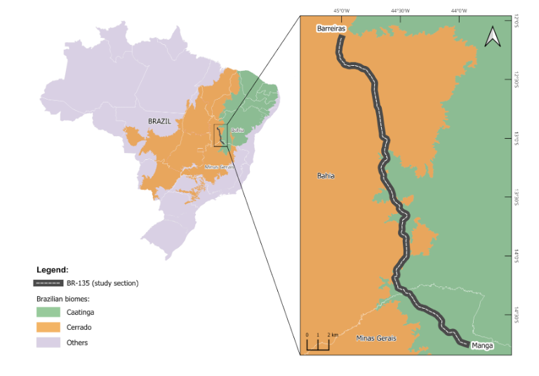
Over a period of five years, we conducted monthly surveys using a vehicle traveling at speeds between 40–60 km/h, covering nearly 370 km of roadway. This stretch includes both paved and unpaved segments. As a result, the dataset includes records of amphibians, birds, reptiles, and mammals affected by vehicle collisions.
To account for how landscape composition might influence roadkill events, we extracted land use and land cover data from the MapBiomas platform (https://brasil.mapbiomas.org/) at three spatial scales from the road axis: 1 km, 3 km, and 5 km. Additionally, traffic volume data were incorporated—field-collected data were available for one segment, while for the remaining segments, traffic volume estimates were obtained through models provided by the Brazilian National Department of Transport Infrastructure (DNIT).
Using the spatialized information, we clipped the polygons derived at the 1 km scale so that each polygon had an area of 2 km². For the 3 km scale, each polygon covered an area of 6 km², and for the 5 km scale, each polygon covered 10 km².
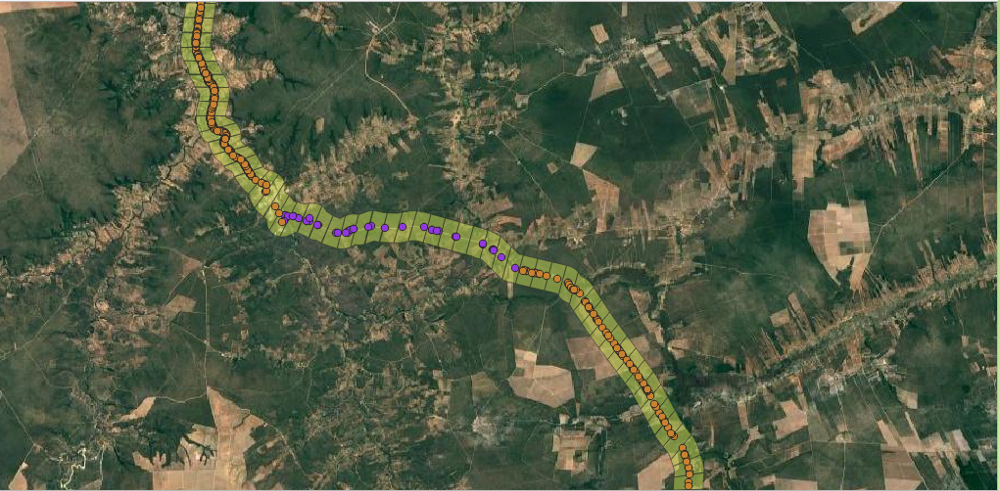
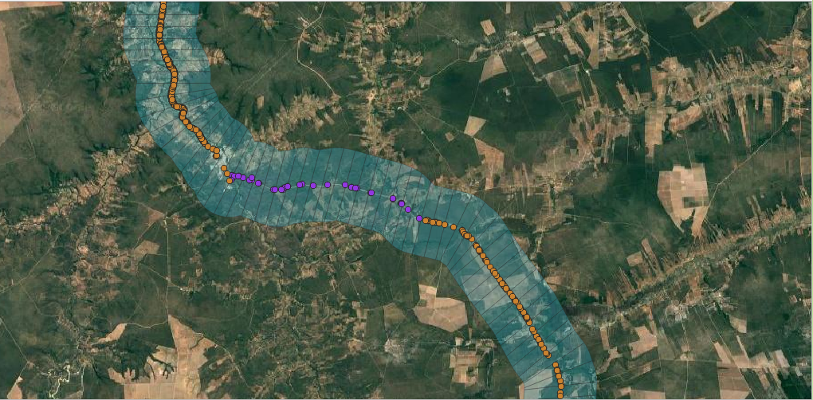
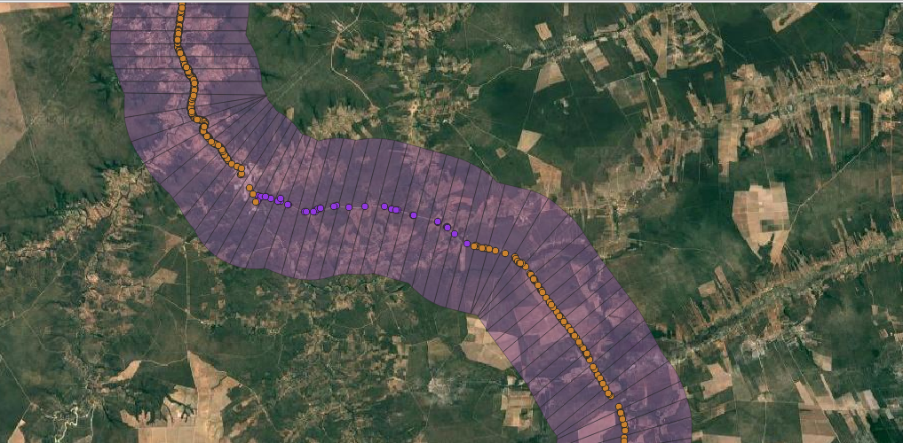
Goals
The objective of this document is to prepare the dataset and subsequently investigate the effect of road pavement on the number of wildlife roadkills.
1) Is there an effect of pavement on the number of wildlife roadkills?
Hypothesis: Considering that pavement allows vehicles to travel at higher speeds and is also associated with increased traffic volume, we expect a higher number of roadkills in paved areas.
2) Does the influence of pavement on the number of roadkill records differ among taxonomic groups?
Hypothesis: Considering that pavement affects vehicle speed, we expect a more pronounced increase in roadkills of more mobile groups, such as birds and mammals, compared to amphibians and reptiles.
3) Do dry and rainy seasons in this region of Brazil influence the number of recorded wildlife roadkills?
Hypothesis: We predict higher roadkill rates during the rainy season due to increased wildlife activity driven by warmer temperatures
4) Does the variation in the spatial scale used to assess landscape components (1 km, 3 km, and 5 km) reflect differences in their relationship with the number of roadkills?
Hypothesis: At larger spatial scales, considering that the total amount of habitat tends to increase, we expect landscape components to have a stronger influence on the number of roadkills. This influence is expected to occur in both the overall roadkill analyses and those conducted separately for each taxonomic group.
Description of the Data Structure
This dataset contains information on roadkill occurrences across different road segments, categorized by taxonomic group, seasonality, and various environmental and infrastructural variables. The dataset includes the following columns:
| Variable | Description |
|---|---|
| polygon | Identifier for the road and landscape segment. |
| taxa | Taxonomic group of the affected species (e.g., mammals, reptiles, amphibians, birds). |
| season | Season in which the observation was recorded (dry or rainy). |
| roadkill_count | Number of roadkill occurrences recorded in the segment/taxa/season. |
| road_length | Length of the road segment (in kilometers). |
| relative_rate | A measure of roadkill occurrences relative to the road length. |
| cult_land | Proportion of cultivated land within the segment’s surrounding area. |
| water | Proportion of water bodies within the segment’s surrounding area. |
| shrubby | Proportion of shrubby vegetation within the segment’s surrounding area. |
| pasture | Proportion of pastureland within the segment’s surrounding area. |
| urban_area | Proportion of urbanized area within the segment’s surrounding area. |
| forest | Proportion of forested land within the segment’s surrounding area. |
| savanna | Proportion of savanna within the segment’s surrounding area. |
| pavement | Proportion of paved road surface. |
| traffic | A measure of traffic intensity in the road segment. |
Packages
Datasets
d1km_raw <- read.xlsx("data_1km.xlsx")
d3km_raw <- read.xlsx("data_3km.xlsx")
d5km_raw <- read.xlsx("data_5km.xlsx")Pavement as a binary variable
Since the pavement variable is in proportion but is mostly a binary variable, we will exclude polygons with intermediate values (where the road segment is partially paved and partially unpaved). I want to keep only the rows where the values are exactly 0 or 1, and exclude all rows with intermediate values, i.e., values greater than 0 and less than 1.
d1km_raw <- d1km_raw %>% filter(pavement %in% c(0, 1))
d3km_raw <- d3km_raw %>% filter(pavement %in% c(0, 1))
d5km_raw <- d5km_raw %>% filter(pavement %in% c(0, 1))checking the values
all(d1km_raw$pavement %in% c(0, 1)) [1] TRUEall(d3km_raw$pavement %in% c(0, 1)) [1] TRUEall(d5km_raw$pavement %in% c(0, 1))[1] TRUEData detailed by taxon and season
I’ll create a list containing the three datasets to simplify the required data manipulation
datasets_raw <- list("1km" = d1km_raw, "3km" = d3km_raw, "5km" = d5km_raw)Now that all the data has been prepared, we can combine the 1 km, 3 km, and 5 km datasets into a single dataframe, while keeping a column to identify the scale
combined_raw <- bind_rows(
d1km_raw %>% mutate(scale = "1km"),
d3km_raw %>% mutate(scale = "3km"),
d5km_raw %>% mutate(scale = "5km")
)To ensure that categorical and numerical variables are properly recognized by R
combined_raw$polygon <- as.factor(combined_raw$polygon)
combined_raw$taxa <- factor(combined_raw$taxa, levels=c("amp","rep", "bird", "mam"))
combined_raw$season <- factor(combined_raw$season, levels=c("dry","rainy"))
combined_raw$pavement <- factor(combined_raw$pavement, levels=c("0","1"))
combined_raw$traffic <- factor(combined_raw$traffic, levels=c("low", "medium","high"), ordered = TRUE)
str(combined_raw)'data.frame': 8808 obs. of 16 variables:
$ polygon : Factor w/ 376 levels "1","2","3","4",..: 1 1 1 1 1 1 1 1 2 2 ...
$ taxa : Factor w/ 4 levels "amp","rep","bird",..: 4 4 2 2 1 1 3 3 4 4 ...
$ season : Factor w/ 2 levels "dry","rainy": 1 2 1 2 1 2 1 2 1 2 ...
$ roadkill_count: num 0 0 0 0 0 0 0 0 1 0 ...
$ road_length : num 1.02 1.02 1.02 1.02 1.02 ...
$ relative_rate : num 0 0 0 0 0 ...
$ cult_land : num 0.23 0.23 0.23 0.23 0.23 ...
$ water : num 0.0654 0.0654 0.0654 0.0654 0.0654 ...
$ shrubby : num 0 0 0 0 0 0 0 0 0 0 ...
$ pasture : num 0.0139 0.0139 0.0139 0.0139 0.0139 ...
$ urban_area : num 1.41 1.41 1.41 1.41 1.41 ...
$ forest : num 0.0874 0.0874 0.0874 0.0874 0.0874 ...
$ savanna : num 0.18 0.18 0.18 0.18 0.18 ...
$ pavement : Factor w/ 2 levels "0","1": 2 2 2 2 2 2 2 2 2 2 ...
$ traffic : Ord.factor w/ 3 levels "low"<"medium"<..: 3 3 3 3 3 3 3 3 3 3 ...
$ scale : chr "1km" "1km" "1km" "1km" ...General data without distinguishing between taxa or seasons
Combine the records of roadkill regardless of rate and season; therefore, we will group by polygon. The roadkill count should be summarized, and for the other columns, we will keep only the first row of each polygon, as as the others are identical copies of the first.
summarize_dataset <- function(data) {
data %>%
group_by(polygon) %>%
summarise(
total_roadkill_count = sum(roadkill_count),
road_length = first(road_length),
cult_land = first(cult_land),
water = first(water),
shrubby = first(shrubby),
pasture = first(pasture),
urban_area = first(urban_area),
forest = first(forest),
savanna = first(savanna),
pavement = first(pavement),
traffic = first(traffic),
.groups = "drop"
)
}
sum_datasets <- lapply(datasets_raw, summarize_dataset)
d1km_raw_sum <- sum_datasets[[1]]
d3km_raw_sum <- sum_datasets[[2]]
d5km_raw_sum <- sum_datasets[[3]]Data Exploration
General exploration - dataset with taxa and season
Now that the data has been reorganized, let’s perform some exploratory analyses and transformations.
Let’s create histograms of the variables to get an idea of their distribution.
numeric_vars <- c("roadkill_count", "road_length", "relative_rate",
"cult_land", "water", "shrubby", "pasture",
"urban_area", "forest", "savanna")
long_numeric <- combined_raw |>
tidyr::pivot_longer(cols = all_of(numeric_vars),
names_to = "variable", values_to = "value") |>
dplyr::select(scale, variable, value)
plot_histograms <- function(scale_level) {
color_map <- c("1km" = "#FFD700", "3km" = "#1f77b4", "5km" = "#9B59B6")
long_numeric %>%
filter(scale == scale_level) %>%
ggplot(aes(x = value)) +
geom_bar(data = ~ filter(., variable == "traffic"),
fill = color_map[[scale_level]], color = "white") +
geom_histogram(data = ~ filter(., variable != "traffic"),
bins = 30, fill = color_map[[scale_level]], color = "white") +
facet_wrap(~ variable, scales = "free", ncol = 4) +
labs(title = paste("Histograms -", scale_level),
x = NULL, y = "frequency") +
theme_minimal()
}
plot_1km <- plot_histograms("1km")
plot_3km <- plot_histograms("3km")
plot_5km <- plot_histograms("5km")
plot_1km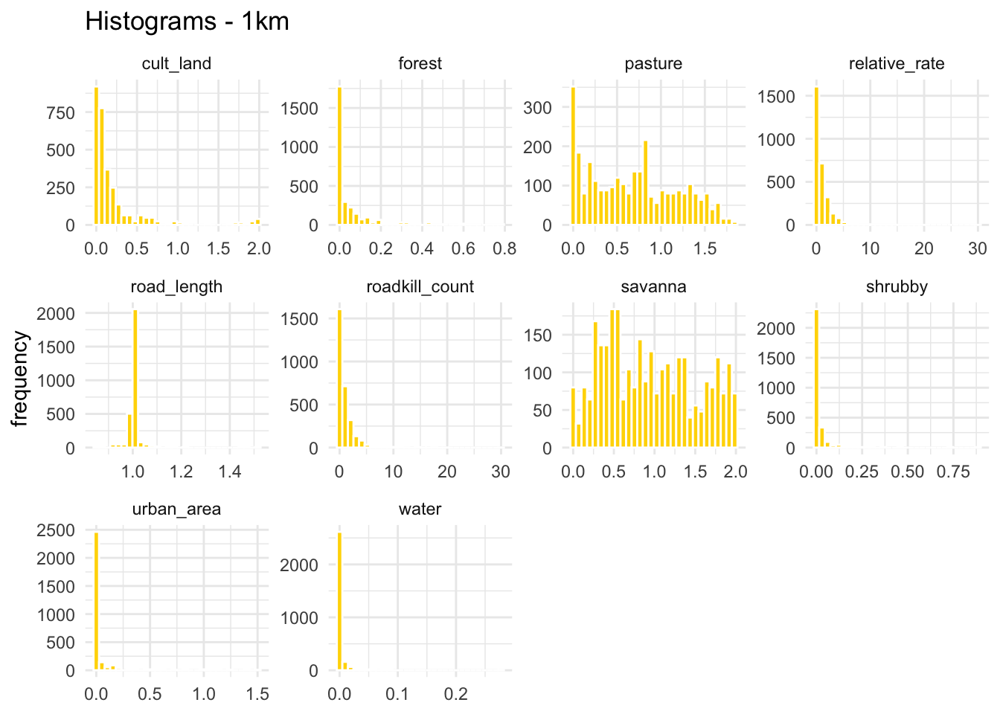
plot_3km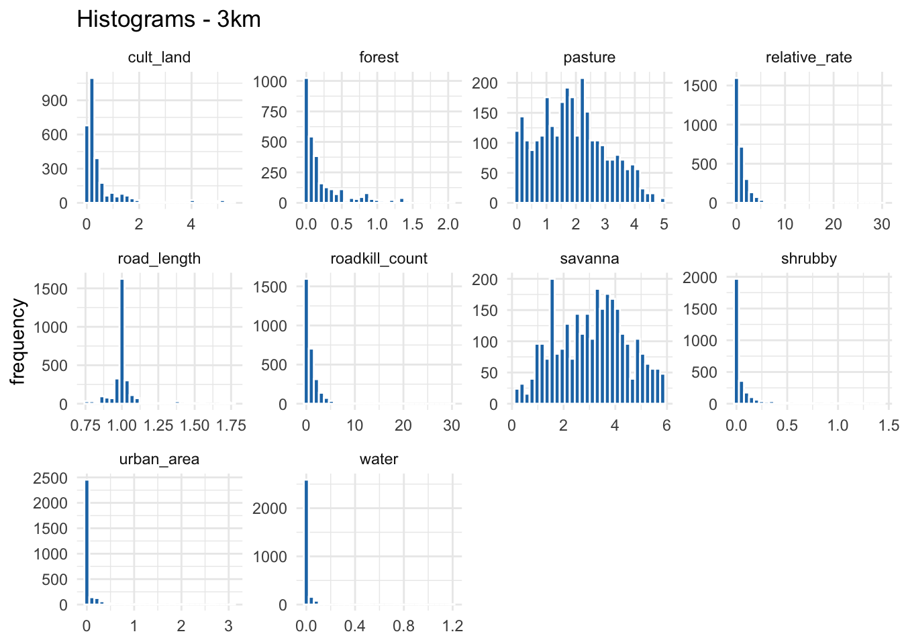
plot_5km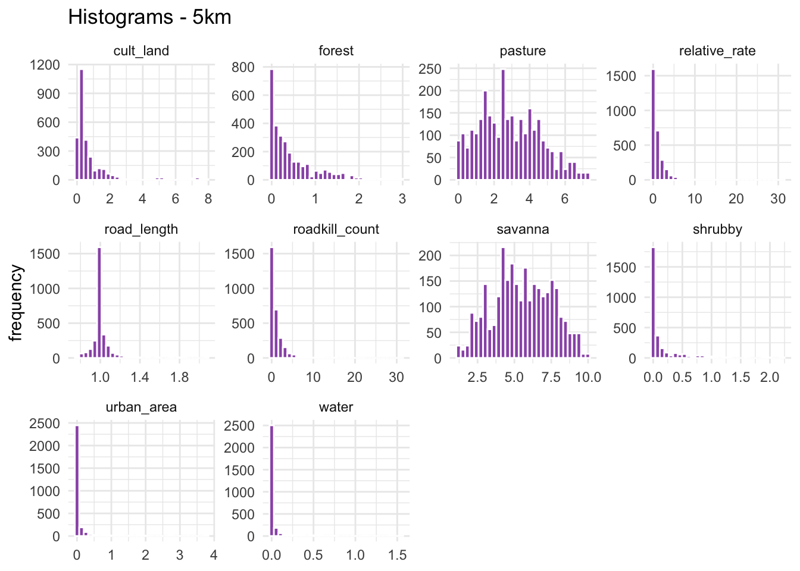
Since the traffic and pavement variables are the same across all subsets, the histograms should look identical for each scale. Let’s generate the histograms to confirm that this information is indeed consistent across the three datasets.
ggplot(combined_raw, aes(x = traffic, fill = interaction(traffic, scale))) +
geom_bar() +
facet_wrap(~ scale) +
theme_minimal() +
labs(
title = "Traffic category frequency by scale",
x = "Traffic category",
y = "Frequency"
) +
scale_fill_manual(values = c(
"low.1km" = "#FFF8B0",
"medium.1km" = "#FFD700",
"high.1km" = "#E6BE00",
"low.3km" = "#AED6F1",
"medium.3km" = "#1f77b4",
"high.3km" = "#154360",
"low.5km" = "#E8DAEF",
"medium.5km" = "#9B59B6",
"high.5km" = "#6C3483"
)) +
theme(legend.position="none")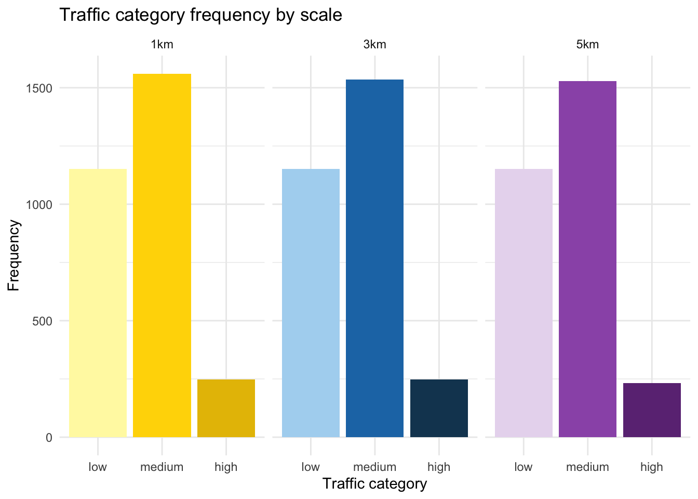
ggplot(combined_raw, aes(x = pavement, fill = interaction(pavement, scale))) +
geom_bar() +
facet_wrap(~ scale) +
theme_minimal() +
labs(
title = "Pavement category frequency by scale",
x = "Pavement category",
y = "Frequency"
) +
scale_fill_manual(values = c(
"0.1km" = "#FFD700",
"1.1km" = "#E6BE00",
"0.3km" = "#1f77b4",
"1.3km" = "#154360",
"0.5km" = "#9B59B6",
"1.5km" = "#6C3483"
)) +
theme(legend.position = "none")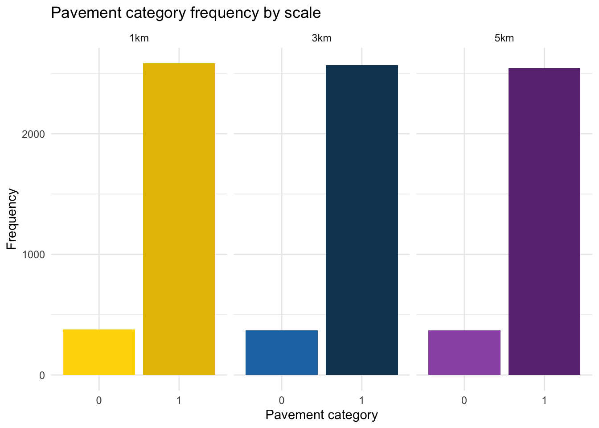
Is there collinearity among the covariates?
Collinearity was assessed to avoid redundancy among covariates, which can affect model stability and interpretation.
check_collinearity <- function(data, scale_label) {
landscape_vars <- data %>%
dplyr::select(cult_land, water, shrubby, pasture, urban_area, forest, savanna)
cor_matrix <- cor(landscape_vars, use = "complete.obs")
colors_1km <- c("low.1km" = "#FFF8B0", "medium.1km" = "#FFD700", "high.1km" = "#E6BE00")
colors_3km <- c("low.3km" = "#AED6F1", "medium.3km" = "#1f77b4", "high.3km" = "#154360")
colors_5km <- c("low.5km" = "#E8DAEF", "medium.5km" = "#9B59B6", "high.5km" = "#6C3483")
if (scale_label == "1 km") {
corrplot(cor_matrix,
method = "color",
type = "upper",
tl.col = "black",
tl.srt = 45,
addCoef.col = "black",
col = colors_1km,
title = paste("Collinearity -", scale_label),
mar = c(0,0,2,0))
} else if (scale_label == "3 km") {
corrplot(cor_matrix,
method = "color",
type = "upper",
tl.col = "black",
tl.srt = 45,
addCoef.col = "black",
col = colors_3km,
title = paste("Collinearity -", scale_label),
mar = c(0,0,2,0))
} else if (scale_label == "5 km") {
corrplot(cor_matrix,
method = "color",
type = "upper",
tl.col = "black",
tl.srt = 45,
addCoef.col = "black",
col = colors_5km,
title = paste("Collinearity -", scale_label),
mar = c(0,0,2,0))
}
}
# Aplicar para cada escala
check_collinearity(d1km_raw, "1 km")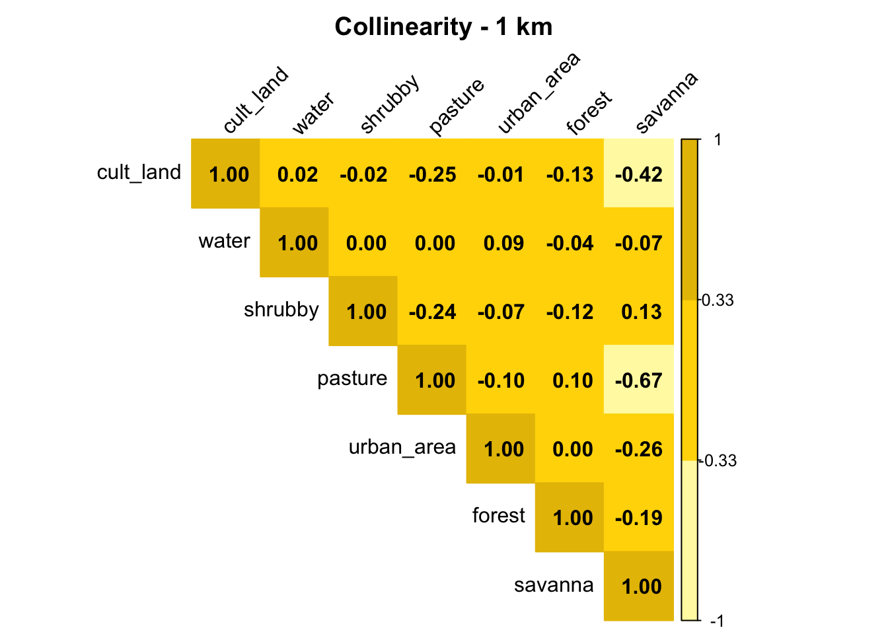
check_collinearity(d3km_raw, "3 km")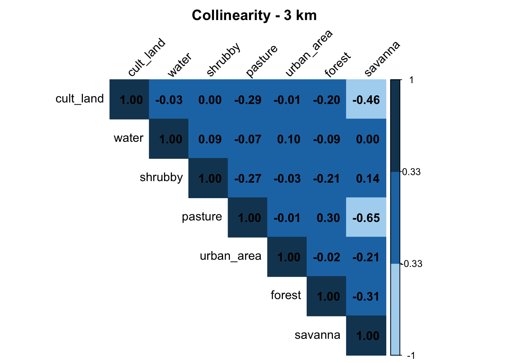
check_collinearity(d5km_raw, "5 km")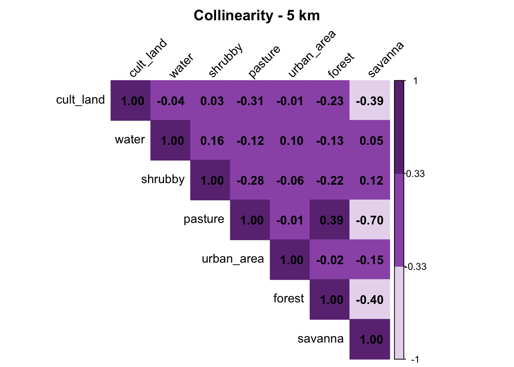
Pasture and savanna are highly correlated, so we don’t need to include both of these variables in our model.
Transformations
Due to the heterogeneity in the scales at which the exploratory variables were measured, and aiming to reduce the effect of outliers, the values will be transformed by applying the logarithmic transformation for variables in m² and square root for linear variables. To make variables comparable and ensure they contribute equally to the analysis, all transformed variables were then standardized using z-score normalization (mean = 0, standard deviation = 1).
The datasets, disaggregated by taxon and season, that have been transformed and standardized will be referred to as d1km, d3km, and d5km. The datasets containing the total number of roadkills (without separating by taxon or season) will be named 1km_sum, 3km_sum, and 5km_sum.
Log
vars_to_log <- c("cult_land", "water", "shrubby", "pasture",
"urban_area", "forest", "savanna")
datasets_t <- lapply(datasets_raw, function(data) {
data %>%
mutate(across(all_of(vars_to_log), ~ log(.x + 1)))
})
d1km <- datasets_t[[1]]
d3km <- datasets_t[[2]]
d5km <- datasets_t[[3]]
datasets_sum_t <- lapply(sum_datasets, function(data) {
data %>%
mutate(across(all_of(vars_to_log), ~ log(.x + 1)))
})
d1km_sum <- datasets_sum_t[[1]]
d3km_sum <- datasets_sum_t[[2]]
d5km_sum <- datasets_sum_t[[3]]Square root
vars_to_sqrt <- c("road_length")
datasets_t <- map(datasets_t, ~ .x %>%
mutate(across(all_of(vars_to_sqrt), ~ sqrt(.x))))
d1km <- datasets_t[[1]]
d3km <- datasets_t[[2]]
d5km <- datasets_t[[3]]
datasets_sum_t <- map(datasets_sum_t, ~ .x %>%
mutate(across(all_of(vars_to_sqrt), ~ sqrt(.x))))
d1km_sum <- datasets_sum_t[[1]]
d3km_sum <- datasets_sum_t[[2]]
d5km_sum <- datasets_sum_t[[3]]z-score standardization
vars_to_standardize <- c("cult_land", "water", "shrubby", "pasture",
"urban_area", "forest", "savanna", "road_length")
datasets_t <- lapply(datasets_t, function(data) {
data %>%
mutate(across(all_of(vars_to_standardize), ~ decostand(.x, method = "standardize")))
})
d1km <- datasets_t[[1]]
d3km <- datasets_t[[2]]
d5km <- datasets_t[[3]]
datasets_sum_t <- lapply(datasets_sum_t, function(data) {
data %>%
mutate(across(all_of(vars_to_standardize), ~ decostand(.x, method = "standardize")))
})
d1km_sum <- datasets_sum_t[[1]]
d3km_sum <- datasets_sum_t[[2]]
d5km_sum <- datasets_sum_t[[3]]Statistical Analyses - GLM e GLMM
It is worth noting that the selected analyses presented here underwent a prior selection process to determine the distribution family that best fit our data. The models used for analyses involving the total number of roadkills (i.e., without separation by taxonomic group) are referred to as total_Xkm_mx. For example, the global model using the total number of roadkill records at the 1 km scale is named total_1km_m0. In contrast, the model in which records are separated by taxon is called taxa_Xkm_mX. If model selection is applied within each analysis (e.g., variable removal), the final number in the model name will reflect the changes made in relation to the global model m0.
Total number of roadkill
We want to assess how pavement affects the number of recorded roadkill incidents, regardless of the season or taxonomic group.
VARIABLES
Response variable: Roadkill number
Predictor variable: Pavement as binary
Exploratory variables: Road length; Cultivated land; Water; Shrubby; Pasture*; Urban area; Forest; Savanna and Traffic.
*It were excluded of model due to correlation with Savanna
Since we performed many transformations after initially specifying the nature of the data, it’s better to double-check that everything is still correctly defined
format_data_GLM <- function(df) {
df$polygon <- as.factor(df$polygon)
df$pavement <- factor(df$pavement, levels = c("0", "1"))
df$traffic <- factor(df$traffic, levels = c("low", "medium", "high"), ordered = TRUE)
df$water <- as.numeric(df$water)
df$road_length <- as.numeric(df$road_length)
df$shrubby <- as.numeric(df$shrubby)
df$urban_area <- as.numeric(df$urban_area)
df$cult_land <- as.numeric(df$cult_land)
df$savanna <- as.numeric(df$savanna)
df$forest <- as.numeric(df$forest)
df$p <- as.numeric(df$savanna)
return(df)
}
# Aplicar aos datasets
d1km_sum <- format_data_GLM(d1km_sum)
d3km_sum <- format_data_GLM(d3km_sum)
d5km_sum <- format_data_GLM(d5km_sum)GLM - Negative binomial
We started the analysis by considering traffic as a random effect in a GLMM. At first, we tried a Poisson model, but it showed signs of overdispersion. Still keeping traffic as a random effect, we then tried a negative binomial model, which handles overdispersion better. However, it was not possible to fit the model properly. Therefore, we present here a negative binomial GLM, treating traffic as a fixed effect.
1km
Global model
total_1km_m0 <- glm.nb (total_roadkill_count ~ traffic + pavement + road_length + cult_land + forest+ urban_area + water + shrubby + savanna,
data = d1km_sum)Overdispersion
(chat <- deviance(total_1km_m0) / df.residual(total_1km_m0))[1] 1.100957Model selection using drop1
We used the drop1 function in R to compare nested models and identify the most influential predictors. This function tests the effect of removing each term from the full model, one at a time, using likelihood ratio tests. Variables with higher p-values contribute less to the model, so we progressively removed the least significant terms, keeping those with the lowest p-values to improve model parsimony. The same procedure will be applied to the other spacial scales.
Global model
drop1(total_1km_m0, test="Chi")Single term deletions
Model:
total_roadkill_count ~ traffic + pavement + road_length + cult_land +
forest + urban_area + water + shrubby + savanna
Df Deviance AIC LRT Pr(>Chi)
<none> 395.24 2052.9
traffic 2 568.11 2221.8 172.863 < 2.2e-16 ***
pavement 1 500.46 2156.2 105.219 < 2.2e-16 ***
road_length 1 396.30 2052.0 1.060 0.30313
cult_land 1 398.54 2054.2 3.298 0.06938 .
forest 1 395.26 2050.9 0.018 0.89247
urban_area 1 432.89 2088.6 37.647 8.48e-10 ***
water 1 396.27 2052.0 1.025 0.31142
shrubby 1 397.23 2052.9 1.986 0.15878
savanna 1 411.83 2067.5 16.590 4.64e-05 ***
---
Signif. codes: 0 '***' 0.001 '**' 0.01 '*' 0.05 '.' 0.1 ' ' 1- without forest
total_1km_m1 <- glm.nb (total_roadkill_count ~ traffic + pavement + urban_area + water +
cult_land + shrubby + savanna + road_length,data = d1km_sum)
drop1(total_1km_m1, test="Chi")Single term deletions
Model:
total_roadkill_count ~ traffic + pavement + urban_area + water +
cult_land + shrubby + savanna + road_length
Df Deviance AIC LRT Pr(>Chi)
<none> 395.26 2050.9
traffic 2 568.20 2219.9 172.946 < 2.2e-16 ***
pavement 1 500.46 2154.2 105.206 < 2.2e-16 ***
urban_area 1 433.18 2086.9 37.925 7.351e-10 ***
water 1 396.29 2050.0 1.030 0.31010
cult_land 1 398.55 2052.2 3.299 0.06932 .
shrubby 1 397.22 2050.9 1.968 0.16071
savanna 1 412.21 2065.9 16.957 3.824e-05 ***
road_length 1 396.31 2050.0 1.055 0.30426
---
Signif. codes: 0 '***' 0.001 '**' 0.01 '*' 0.05 '.' 0.1 ' ' 1- without water
total_1km_m2 <- glm.nb (total_roadkill_count ~ traffic + pavement + urban_area +
cult_land + shrubby + savanna + road_length,data = d1km_sum)
drop1(total_1km_m2, test="Chi")Single term deletions
Model:
total_roadkill_count ~ traffic + pavement + urban_area + cult_land +
shrubby + savanna + road_length
Df Deviance AIC LRT Pr(>Chi)
<none> 395.04 2050.0
traffic 2 591.37 2242.3 196.327 < 2.2e-16 ***
pavement 1 502.17 2155.1 107.122 < 2.2e-16 ***
urban_area 1 433.51 2086.4 38.465 5.576e-10 ***
cult_land 1 398.72 2051.7 3.672 0.05532 .
shrubby 1 396.85 2049.8 1.810 0.17855
savanna 1 412.77 2065.7 17.730 2.546e-05 ***
road_length 1 396.05 2049.0 1.009 0.31525
---
Signif. codes: 0 '***' 0.001 '**' 0.01 '*' 0.05 '.' 0.1 ' ' 1- without road length
total_1km_m3 <- glm.nb (total_roadkill_count ~ traffic + pavement + urban_area +
cult_land + shrubby + savanna, data = d1km_sum)
drop1(total_1km_m3, test="Chi")Single term deletions
Model:
total_roadkill_count ~ traffic + pavement + urban_area + cult_land +
shrubby + savanna
Df Deviance AIC LRT Pr(>Chi)
<none> 395.71 2049.0
traffic 2 594.68 2243.9 198.967 < 2.2e-16 ***
pavement 1 501.84 2153.1 106.128 < 2.2e-16 ***
urban_area 1 433.74 2085.0 38.030 6.966e-10 ***
cult_land 1 399.55 2050.8 3.836 0.05015 .
shrubby 1 397.20 2048.5 1.490 0.22229
savanna 1 413.97 2065.2 18.261 1.926e-05 ***
---
Signif. codes: 0 '***' 0.001 '**' 0.01 '*' 0.05 '.' 0.1 ' ' 1- without shrubby
total_1km_m4 <- glm.nb (total_roadkill_count ~ traffic + pavement + urban_area +
cult_land + savanna, data = d1km_sum)
drop1(total_1km_m4, test="Chi")Single term deletions
Model:
total_roadkill_count ~ traffic + pavement + urban_area + cult_land +
savanna
Df Deviance AIC LRT Pr(>Chi)
<none> 394.16 2048.5
traffic 2 599.21 2249.5 205.049 < 2.2e-16 ***
pavement 1 507.56 2159.9 113.394 < 2.2e-16 ***
urban_area 1 432.05 2084.3 37.890 7.483e-10 ***
cult_land 1 398.45 2050.8 4.289 0.03835 *
savanna 1 414.32 2066.6 20.154 7.147e-06 ***
---
Signif. codes: 0 '***' 0.001 '**' 0.01 '*' 0.05 '.' 0.1 ' ' 1- without cultivated land
total_1km_m5 <- glm.nb (total_roadkill_count ~ traffic + pavement + urban_area
+ savanna, data = d1km_sum)
drop1(total_1km_m5, test="Chi")Single term deletions
Model:
total_roadkill_count ~ traffic + pavement + urban_area + savanna
Df Deviance AIC LRT Pr(>Chi)
<none> 393.57 2050.7
traffic 2 605.64 2258.8 212.077 < 2.2e-16 ***
pavement 1 502.10 2157.2 108.538 < 2.2e-16 ***
urban_area 1 427.41 2082.6 33.848 5.960e-09 ***
savanna 1 409.45 2064.6 15.885 6.732e-05 ***
---
Signif. codes: 0 '***' 0.001 '**' 0.01 '*' 0.05 '.' 0.1 ' ' 1- without savanna
total_1km_m6 <- glm.nb (total_roadkill_count ~ traffic + pavement + urban_area,
data = d1km_sum)
drop1(total_1km_m6, test="Chi")Single term deletions
Model:
total_roadkill_count ~ traffic + pavement + urban_area
Df Deviance AIC LRT Pr(>Chi)
<none> 393.36 2064.2
traffic 2 600.82 2267.7 207.462 < 2.2e-16 ***
pavement 1 500.09 2168.9 106.735 < 2.2e-16 ***
urban_area 1 418.01 2086.9 24.651 6.869e-07 ***
---
Signif. codes: 0 '***' 0.001 '**' 0.01 '*' 0.05 '.' 0.1 ' ' 1- without urban area
total_1km_m7 <- glm.nb (total_roadkill_count ~ traffic + pavement,
data = d1km_sum)
drop1(total_1km_m7, test="Chi")Single term deletions
Model:
total_roadkill_count ~ traffic + pavement
Df Deviance AIC LRT Pr(>Chi)
<none> 390.44 2085.8
traffic 2 566.42 2257.7 175.980 < 2.2e-16 ***
pavement 1 485.27 2178.6 94.827 < 2.2e-16 ***
---
Signif. codes: 0 '***' 0.001 '**' 0.01 '*' 0.05 '.' 0.1 ' ' 1- without traffic
total_1km_m8 <- glm.nb (total_roadkill_count ~ pavement, data = d1km_sum)
drop1(total_1km_m8, test="Chi")Single term deletions
Model:
total_roadkill_count ~ pavement
Df Deviance AIC LRT Pr(>Chi)
<none> 390.65 2221.2
pavement 1 488.03 2316.6 97.378 < 2.2e-16 ***
---
Signif. codes: 0 '***' 0.001 '**' 0.01 '*' 0.05 '.' 0.1 ' ' 13km
total_3km_m0 <- glm.nb (total_roadkill_count ~ traffic + pavement + savanna + urban_area +
water + forest + road_length + cult_land + shrubby,
data = d3km_sum)Overdispersion
(chat <- deviance(total_3km_m0) / df.residual(total_3km_m0))[1] 1.106621Model selection using drop1
drop1(total_3km_m0, test="Chi")Single term deletions
Model:
total_roadkill_count ~ traffic + pavement + savanna + urban_area +
water + forest + road_length + cult_land + shrubby
Df Deviance AIC LRT Pr(>Chi)
<none> 393.96 2048.0
traffic 2 552.96 2203.0 159.000 < 2.2e-16 ***
pavement 1 500.47 2152.5 106.518 < 2.2e-16 ***
savanna 1 397.54 2049.6 3.579 0.05851 .
urban_area 1 424.30 2076.4 30.346 3.614e-08 ***
water 1 395.57 2047.6 1.612 0.20417
forest 1 396.94 2049.0 2.984 0.08411 .
road_length 1 397.76 2049.8 3.801 0.05122 .
cult_land 1 394.26 2046.3 0.304 0.58163
shrubby 1 394.15 2046.2 0.197 0.65720
---
Signif. codes: 0 '***' 0.001 '**' 0.01 '*' 0.05 '.' 0.1 ' ' 1- without shrubby
total_3km_m1 <- glm.nb (total_roadkill_count ~ traffic + pavement + savanna + urban_area +
water + forest + road_length + cult_land,
data = d3km_sum)
drop1(total_3km_m1, test="Chi")Single term deletions
Model:
total_roadkill_count ~ traffic + pavement + savanna + urban_area +
water + forest + road_length + cult_land
Df Deviance AIC LRT Pr(>Chi)
<none> 393.46 2046.2
traffic 2 559.61 2208.4 166.152 < 2.2e-16 ***
pavement 1 501.23 2152.0 107.768 < 2.2e-16 ***
savanna 1 397.20 2048.0 3.741 0.05311 .
urban_area 1 424.08 2074.8 30.620 3.138e-08 ***
water 1 394.96 2045.7 1.497 0.22114
forest 1 396.80 2047.5 3.344 0.06745 .
road_length 1 397.17 2047.9 3.707 0.05419 .
cult_land 1 393.79 2044.5 0.329 0.56601
---
Signif. codes: 0 '***' 0.001 '**' 0.01 '*' 0.05 '.' 0.1 ' ' 1- without cultivated land
total_3km_m2 <- glm.nb (total_roadkill_count ~ traffic + pavement + savanna + urban_area +
water + forest + road_length,
data = d3km_sum)
drop1(total_3km_m2, test="Chi")Single term deletions
Model:
total_roadkill_count ~ traffic + pavement + savanna + urban_area +
water + forest + road_length
Df Deviance AIC LRT Pr(>Chi)
<none> 393.26 2044.5
traffic 2 610.59 2257.9 217.327 < 2.2e-16 ***
pavement 1 502.09 2151.4 108.833 < 2.2e-16 ***
savanna 1 397.90 2047.2 4.636 0.03130 *
urban_area 1 424.19 2073.5 30.931 2.674e-08 ***
water 1 394.87 2044.1 1.603 0.20548
forest 1 398.60 2047.9 5.338 0.02086 *
road_length 1 396.97 2046.2 3.711 0.05405 .
---
Signif. codes: 0 '***' 0.001 '**' 0.01 '*' 0.05 '.' 0.1 ' ' 1- without water
total_3km_m3 <- glm.nb (total_roadkill_count ~ traffic + pavement + savanna + urban_area +
forest + road_length,
data = d3km_sum)
drop1(total_3km_m3, test="Chi")Single term deletions
Model:
total_roadkill_count ~ traffic + pavement + savanna + urban_area +
forest + road_length
Df Deviance AIC LRT Pr(>Chi)
<none> 393.38 2044.1
traffic 2 612.85 2259.6 219.470 < 2.2e-16 ***
pavement 1 503.80 2152.6 110.422 < 2.2e-16 ***
savanna 1 397.85 2046.6 4.465 0.03459 *
urban_area 1 423.07 2071.8 29.687 5.077e-08 ***
forest 1 398.36 2047.1 4.982 0.02561 *
road_length 1 397.10 2045.8 3.715 0.05392 .
---
Signif. codes: 0 '***' 0.001 '**' 0.01 '*' 0.05 '.' 0.1 ' ' 1- without road length
total_3km_m4 <- glm.nb (total_roadkill_count ~ traffic + pavement + savanna + urban_area +
forest,
data = d3km_sum)
drop1(total_3km_m4, test="Chi")Single term deletions
Model:
total_roadkill_count ~ traffic + pavement + savanna + urban_area +
forest
Df Deviance AIC LRT Pr(>Chi)
<none> 393.77 2045.8
traffic 2 615.40 2263.5 221.634 < 2.2e-16 ***
pavement 1 500.68 2150.7 106.906 < 2.2e-16 ***
savanna 1 398.39 2048.5 4.622 0.03157 *
urban_area 1 422.37 2072.4 28.603 8.884e-08 ***
forest 1 399.47 2049.5 5.705 0.01691 *
---
Signif. codes: 0 '***' 0.001 '**' 0.01 '*' 0.05 '.' 0.1 ' ' 1- without savanna
total_3km_m5 <- glm.nb (total_roadkill_count ~ traffic + pavement + urban_area +
forest,
data = d3km_sum)
drop1(total_3km_m5, test="Chi")Single term deletions
Model:
total_roadkill_count ~ traffic + pavement + urban_area + forest
Df Deviance AIC LRT Pr(>Chi)
<none> 393.24 2048.4
traffic 2 613.45 2264.6 220.211 < 2.2e-16 ***
pavement 1 497.34 2150.5 104.093 < 2.2e-16 ***
urban_area 1 418.17 2071.3 24.929 5.947e-07 ***
forest 1 402.49 2055.7 9.246 0.002361 **
---
Signif. codes: 0 '***' 0.001 '**' 0.01 '*' 0.05 '.' 0.1 ' ' 1- without forest
total_3km_m6 <- glm.nb (total_roadkill_count ~ traffic + pavement + urban_area,
data = d3km_sum)
drop1(total_3km_m6, test="Chi")Single term deletions
Model:
total_roadkill_count ~ traffic + pavement + urban_area
Df Deviance AIC LRT Pr(>Chi)
<none> 393.50 2055.5
traffic 2 602.17 2260.2 208.673 < 2.2e-16 ***
pavement 1 495.58 2155.6 102.081 < 2.2e-16 ***
urban_area 1 419.34 2079.4 25.834 3.721e-07 ***
---
Signif. codes: 0 '***' 0.001 '**' 0.01 '*' 0.05 '.' 0.1 ' ' 1- without urban area
total_3km_m7 <- glm.nb (total_roadkill_count ~ traffic + pavement,
data = d3km_sum)
drop1(total_3km_m7, test="Chi")Single term deletions
Model:
total_roadkill_count ~ traffic + pavement
Df Deviance AIC LRT Pr(>Chi)
<none> 390.67 2078.2
traffic 2 560.08 2243.6 169.405 < 2.2e-16 ***
pavement 1 481.23 2166.7 90.553 < 2.2e-16 ***
---
Signif. codes: 0 '***' 0.001 '**' 0.01 '*' 0.05 '.' 0.1 ' ' 1- without traffic
total_3km_m8 <- glm.nb (total_roadkill_count ~ pavement,
data = d3km_sum)
drop1(total_3km_m8, test="Chi")Single term deletions
Model:
total_roadkill_count ~ pavement
Df Deviance AIC LRT Pr(>Chi)
<none> 390.55 2209.2
pavement 1 484.43 2301.1 93.877 < 2.2e-16 ***
---
Signif. codes: 0 '***' 0.001 '**' 0.01 '*' 0.05 '.' 0.1 ' ' 15km
Global model
total_5km_m0 <- glm.nb (total_roadkill_count ~ traffic + pavement + road_length + forest
+ cult_land + urban_area + water + shrubby + savanna,
data = d5km_sum)Overdispersion
(chat <- deviance(total_5km_m0) / df.residual(total_5km_m0))[1] 1.120495Model selection using drop1
drop1(total_5km_m0, test="Chi")Single term deletions
Model:
total_roadkill_count ~ traffic + pavement + road_length + forest +
cult_land + urban_area + water + shrubby + savanna
Df Deviance AIC LRT Pr(>Chi)
<none> 395.53 2043.2
traffic 2 540.01 2183.7 144.474 < 2.2e-16 ***
pavement 1 500.56 2146.2 105.028 < 2.2e-16 ***
road_length 1 404.76 2050.4 9.229 0.002383 **
forest 1 400.02 2045.7 4.490 0.034094 *
cult_land 1 395.55 2041.2 0.016 0.899454
urban_area 1 420.34 2066.0 24.809 6.331e-07 ***
water 1 397.41 2043.1 1.873 0.171158
shrubby 1 395.96 2041.6 0.424 0.514870
savanna 1 396.90 2042.6 1.370 0.241849
---
Signif. codes: 0 '***' 0.001 '**' 0.01 '*' 0.05 '.' 0.1 ' ' 1- without cultivated land
total_5km_m1 <- glm.nb (total_roadkill_count ~ traffic + pavement + road_length + forest
+ urban_area + water + shrubby + savanna,
data = d5km_sum)
drop1(total_5km_m1, test="Chi")Single term deletions
Model:
total_roadkill_count ~ traffic + pavement + road_length + forest +
urban_area + water + shrubby + savanna
Df Deviance AIC LRT Pr(>Chi)
<none> 395.60 2041.2
traffic 2 598.38 2240.0 202.786 < 2.2e-16 ***
pavement 1 503.34 2147.0 107.745 < 2.2e-16 ***
road_length 1 404.85 2048.5 9.250 0.002355 **
forest 1 401.13 2044.8 5.537 0.018620 *
urban_area 1 421.54 2065.2 25.941 3.521e-07 ***
water 1 397.45 2041.1 1.857 0.172960
shrubby 1 396.01 2039.7 0.417 0.518437
savanna 1 398.44 2042.1 2.845 0.091660 .
---
Signif. codes: 0 '***' 0.001 '**' 0.01 '*' 0.05 '.' 0.1 ' ' 1- without shrubby
total_5km_m2 <- glm.nb (total_roadkill_count ~ traffic + pavement + road_length + forest
+ urban_area + water + savanna,
data=d5km_sum)
drop1(total_5km_m2, test="Chi")Single term deletions
Model:
total_roadkill_count ~ traffic + pavement + road_length + forest +
urban_area + water + savanna
Df Deviance AIC LRT Pr(>Chi)
<none> 395.07 2039.7
traffic 2 610.50 2251.1 215.431 < 2.2e-16 ***
pavement 1 504.19 2146.8 109.120 < 2.2e-16 ***
road_length 1 404.33 2046.9 9.261 0.002341 **
forest 1 401.61 2044.2 6.538 0.010558 *
urban_area 1 420.91 2063.5 25.843 3.704e-07 ***
water 1 396.63 2039.2 1.556 0.212208
savanna 1 397.93 2040.5 2.859 0.090843 .
---
Signif. codes: 0 '***' 0.001 '**' 0.01 '*' 0.05 '.' 0.1 ' ' 1- without water
total_5km_m3 <- glm.nb (total_roadkill_count ~ traffic + pavement + road_length + forest
+ urban_area + savanna,
data=d5km_sum)
drop1(total_5km_m3, test="Chi")Single term deletions
Model:
total_roadkill_count ~ traffic + pavement + road_length + forest +
urban_area + savanna
Df Deviance AIC LRT Pr(>Chi)
<none> 395.17 2039.2
traffic 2 609.00 2249.0 213.822 < 2.2e-16 ***
pavement 1 506.80 2148.8 111.627 < 2.2e-16 ***
road_length 1 404.35 2046.4 9.172 0.002457 **
forest 1 401.01 2043.0 5.837 0.015696 *
urban_area 1 419.74 2061.8 24.568 7.173e-07 ***
savanna 1 397.99 2040.0 2.815 0.093376 .
---
Signif. codes: 0 '***' 0.001 '**' 0.01 '*' 0.05 '.' 0.1 ' ' 1- without savanna
total_5km_m4 <- glm.nb (total_roadkill_count ~ traffic + pavement + road_length + forest
+ urban_area,
data=d5km_sum)
drop1(total_5km_m4, test="Chi")Single term deletions
Model:
total_roadkill_count ~ traffic + pavement + road_length + forest +
urban_area
Df Deviance AIC LRT Pr(>Chi)
<none> 394.28 2040.0
traffic 2 602.92 2244.6 208.635 < 2.2e-16 ***
pavement 1 503.53 2147.2 109.250 < 2.2e-16 ***
road_length 1 402.84 2046.5 8.558 0.003440 **
forest 1 404.91 2048.6 10.624 0.001116 **
urban_area 1 416.43 2060.1 22.146 2.526e-06 ***
---
Signif. codes: 0 '***' 0.001 '**' 0.01 '*' 0.05 '.' 0.1 ' ' 1- without road length
total_5km_m5 <- glm.nb (total_roadkill_count ~ traffic + pavement + forest + urban_area,
data=d5km_sum)
drop1(total_5km_m5, test="Chi")Single term deletions
Model:
total_roadkill_count ~ traffic + pavement + forest + urban_area
Df Deviance AIC LRT Pr(>Chi)
<none> 395.38 2046.5
traffic 2 604.58 2251.7 209.200 < 2.2e-16 ***
pavement 1 497.77 2146.9 102.387 < 2.2e-16 ***
forest 1 408.87 2058.0 13.489 0.0002399 ***
urban_area 1 415.85 2064.9 20.464 6.075e-06 ***
---
Signif. codes: 0 '***' 0.001 '**' 0.01 '*' 0.05 '.' 0.1 ' ' 1- without forest
total_5km_m6 <- glm.nb (total_roadkill_count ~ traffic + pavement + urban_area,
data=d5km_sum)
drop1(total_5km_m6, test="Chi")Single term deletions
Model:
total_roadkill_count ~ traffic + pavement + urban_area
Df Deviance AIC LRT Pr(>Chi)
<none> 395.33 2057.7
traffic 2 590.38 2248.7 195.051 < 2.2e-16 ***
pavement 1 494.47 2154.8 99.138 < 2.2e-16 ***
urban_area 1 415.22 2075.6 19.890 8.204e-06 ***
---
Signif. codes: 0 '***' 0.001 '**' 0.01 '*' 0.05 '.' 0.1 ' ' 1- without urban area
total_5km_m7 <- glm.nb (total_roadkill_count ~ traffic + pavement,
data=d5km_sum)
drop1(total_5km_m7, test="Chi")Single term deletions
Model:
total_roadkill_count ~ traffic + pavement
Df Deviance AIC LRT Pr(>Chi)
<none> 392.50 2074.8
traffic 2 556.26 2234.6 163.762 < 2.2e-16 ***
pavement 1 481.42 2161.7 88.921 < 2.2e-16 ***
---
Signif. codes: 0 '***' 0.001 '**' 0.01 '*' 0.05 '.' 0.1 ' ' 1- without traffic
total_5km_m8 <- glm.nb (total_roadkill_count ~ pavement,
data=d5km_sum)
drop1(total_5km_m8, test="Chi")Single term deletions
Model:
total_roadkill_count ~ pavement
Df Deviance AIC LRT Pr(>Chi)
<none> 390.31 2201.5
pavement 1 479.82 2289.0 89.514 < 2.2e-16 ***
---
Signif. codes: 0 '***' 0.001 '**' 0.01 '*' 0.05 '.' 0.1 ' ' 1AIC Tables
Let’s build the AIC table to understand which model performs best.
aic_1km <- as.data.frame(AICtab(total_1km_m0, total_1km_m1, total_1km_m2, total_1km_m3, total_1km_m4, total_1km_m5, total_1km_m6, total_1km_m7,total_1km_m8, weights=TRUE))
aic_1km dAIC df weight
total_1km_m4 0.0000000 8 3.381148e-01
total_1km_m3 0.5244915 9 2.601191e-01
total_1km_m2 1.5161265 10 1.584315e-01
total_1km_m5 2.2533575 7 1.095857e-01
total_1km_m1 2.4882139 11 9.744407e-02
total_1km_m0 4.4699416 12 3.617668e-02
total_1km_m6 15.7564305 6 1.281146e-04
total_1km_m7 37.2871524 5 2.705590e-09
total_1km_m8 172.7592685 3 1.034822e-38aic_3km <- as.data.frame(AICtab(total_3km_m0, total_3km_m1, total_3km_m2, total_3km_m3, total_3km_m4, total_3km_m5, total_3km_m6, total_3km_m7,total_3km_m8, weights=TRUE))
aic_3km dAIC df weight
total_3km_m3 0.0000000 9 3.488736e-01
total_3km_m2 0.4003653 10 2.855814e-01
total_3km_m4 1.6983845 8 1.492343e-01
total_3km_m1 2.0713901 11 1.238430e-01
total_3km_m0 3.8751939 12 5.025513e-02
total_3km_m5 4.2799580 7 4.104753e-02
total_3km_m6 11.4038481 6 1.165075e-03
total_3km_m7 34.0201562 5 1.429832e-08
total_3km_m8 165.1083362 3 4.896079e-37aic_5km <- as.data.frame(AICtab(total_5km_m0, total_5km_m1, total_5km_m2, total_5km_m3, total_5km_m4, total_5km_m5, total_5km_m6, total_5km_m7,total_5km_m8, weights=TRUE))
aic_5km dAIC df weight
total_5km_m3 0.0000000 9 3.338944e-01
total_5km_m2 0.4468939 10 2.670345e-01
total_5km_m4 0.7943270 8 2.244519e-01
total_5km_m1 2.0312471 11 1.209287e-01
total_5km_m0 4.0152856 12 4.484365e-02
total_5km_m5 7.2688619 7 8.814463e-03
total_5km_m6 18.4866714 6 3.230573e-05
total_5km_m7 35.6107656 5 6.177741e-09
total_5km_m8 162.2606675 3 1.946045e-36aic_1km$escala <- "1km"
aic_3km$escala <- "3km"
aic_5km$escala <- "5km"
aic_all <- rbind(aic_1km, aic_3km, aic_5km)Using model.sel, we will examine the AIC values
get_model_sel <- function(prefix, escala) {
modelos <- lapply(0:8, function(i) {
model_name <- paste0(prefix, "_m", i)
get(model_name, envir = .GlobalEnv)
})
names(modelos) <- paste0(escala, "_m", 0:8)
model_sel <- as.data.frame(model.sel(modelos, rank = AIC))
model_sel$model <- rownames(model_sel)
model_sel$model <- factor(model_sel$model,
levels = paste0(escala, "_m", 0:8))
model_sel <- model_sel[order(model_sel$model), ]
model_sel$escala <- escala
rownames(model_sel) <- NULL
return(model_sel)
}
model_sel_1km <- get_model_sel("total_1km", "1km")
model_sel_3km <- get_model_sel("total_3km", "3km")
model_sel_5km <- get_model_sel("total_5km", "5km")
model_sel_all<- rbind(model_sel_1km, model_sel_3km, model_sel_5km)
head(model_sel_all) (Intercept) cult_land forest pavement road_length savanna
1 0.8623419 -0.08472070 -0.005343383 + 0.04184397 -0.1923928
2 0.8629434 -0.08374990 NA + 0.04173368 -0.1911795
3 0.8619323 -0.08819057 NA + 0.04094254 -0.1950734
4 0.8832577 -0.09011000 NA + NA -0.1977022
5 0.8616873 -0.09536195 NA + NA -0.2064228
6 0.8736845 NA NA + NA -0.1534716
shrubby traffic urban_area water family
1 -0.06447406 + -0.2801860 0.03440912 Negative Binomial(3.4252,log)
2 -0.06384200 + -0.2794982 0.03449529 Negative Binomial(3.4251,log)
3 -0.06116805 + -0.2816740 NA Negative Binomial(3.4062,log)
4 -0.05549671 + -0.2796943 NA Negative Binomial(3.401,log)
5 NA + -0.2805579 NA Negative Binomial(3.3557,log)
6 NA + -0.2617292 NA Negative Binomial(3.2848,log)
init.theta df logLik AIC delta weight model escala
1 3.43 12 -1015.466 2054.933 4.4699416 0.03617668 1km_m0 1km
2 3.43 11 -1015.476 2052.951 2.4882139 0.09744407 1km_m1 1km
3 3.41 10 -1015.990 2051.979 1.5161265 0.15843149 1km_m2 1km
4 3.4 9 -1016.494 2050.988 0.5244915 0.26011914 1km_m3 1km
5 3.36 8 -1017.232 2050.463 0.0000000 0.33811481 1km_m4 1km
6 3.28 7 -1019.358 2052.716 2.2533575 0.10958569 1km_m5 1kmR² values
get_rsq <- function(prefix, escala) {
rsq_values <- sapply(0:8, function(i) {
model_name <- paste0(prefix, "_m", i)
model <- get(model_name, envir = .GlobalEnv)
rsq_output <- rsquared(model)
return(rsq_output$R.squared)
})
rsq_df <- data.frame(
Model = paste0(escala, "_m", 0:8),
R_squared = rsq_values,
escala = escala
)
return(rsq_df)
}
rsq_1km <- get_rsq("total_1km", "1km")
rsq_3km <- get_rsq("total_3km", "3km")
rsq_5km <- get_rsq("total_5km", "5km")
rsq_all <- rbind(rsq_1km, rsq_3km, rsq_5km)
head(rsq_all) Model R_squared escala
1 1km_m0 0.7622043 1km
2 1km_m1 0.7621817 1km
3 1km_m2 0.7603268 1km
4 1km_m3 0.7590951 1km
5 1km_m4 0.7555608 1km
6 1km_m5 0.7479152 1km% Deviance
calc_dev_perc <- function(prefix, escala) {
deviance_values <- sapply(0:8, function(i) {
model_name <- paste0(prefix, "_m", i)
model <- get(model_name, envir = .GlobalEnv)
null_deviance <- model$null.deviance
residual_deviance <- model$deviance
deviance_percentage <- ((null_deviance - residual_deviance) / null_deviance) * 100
return(deviance_percentage)
})
deviance_df <- data.frame(
Model = paste0(escala, "_m", 0:8),
Deviance_Percentage = deviance_values,
escala = escala
)
return(deviance_df)
}
deviance_1km <- calc_dev_perc("total_1km", "1km")
deviance_3km <- calc_dev_perc("total_3km", "3km")
deviance_5km <- calc_dev_perc("total_5km", "5km")
deviance_all <- rbind(deviance_1km, deviance_3km, deviance_5km)
head(deviance_all) Model Deviance_Percentage escala
1 1km_m0 51.46378 1km
2 1km_m1 51.46144 1km
3 1km_m2 51.31750 1km
4 1km_m3 51.18832 1km
5 1km_m4 50.96341 1km
6 1km_m5 50.36558 1kmGeneral table
Generate general summary tables for each spatial scale (1km, 3km, 5km)
create_general_table <- function(aic_df, rsq_df, deviance_df, model_sel, models, escala, model_sequence) {
aic_df$model <- model_sequence
aic_df <- aic_df[order(aic_df$model), ]
model_order <- as.numeric(as.character(aic_df$model))
ordered_models <- models[model_order + 1]
formulas <- sapply(ordered_models, function(m) as.character(formula(m))[3])
rsq_col <- rsq_df[model_order + 1, 2]
deviance_col <- deviance_df[model_order + 1, 2]
aic_value <- model_sel[model_order + 1, 15]
general_table <- data.frame(
escala = escala,
model = aic_df$model,
formula = formulas,
AIC = aic_value,
dAIC = aic_df$dAIC,
df = aic_df$df,
weight = aic_df$weight,
rsq = rsq_col,
deviance = deviance_col
)
general_table <- general_table[order(general_table$dAIC), ]
write_xlsx(general_table, paste0("general_table_", escala, ".xlsx"))
return(general_table)
}and combine them into a single table for all scales
total_1km_models <- list(total_1km_m0, total_1km_m1, total_1km_m2, total_1km_m3,
total_1km_m4, total_1km_m5, total_1km_m6, total_1km_m7,
total_1km_m8)
total_3km_models <- list(total_3km_m0, total_3km_m1, total_3km_m2, total_3km_m3,
total_3km_m4, total_3km_m5, total_3km_m6, total_3km_m7,
total_3km_m8)
total_5km_models <- list(total_5km_m0, total_5km_m1, total_5km_m2, total_5km_m3, total_5km_m4,
total_5km_m5, total_5km_m6, total_5km_m7, total_5km_m8)
model_seq_1km <- c(4, 3, 2, 5, 1, 0, 6, 7, 8)
model_seq_3km <- c(3, 2, 4, 1, 0, 5, 6, 7, 8)
model_seq_5km <- c(3, 2, 4, 1, 0, 5, 6, 7, 8)
general_table_1km <- create_general_table(aic_1km, rsq_1km, deviance_1km, model_sel_1km, total_1km_models, "1km", model_seq_1km)
general_table_3km <- create_general_table(aic_3km, rsq_3km, deviance_3km, model_sel_3km, total_3km_models, "3km", model_seq_3km)
general_table_5km <- create_general_table(aic_5km, rsq_5km, deviance_5km, model_sel_5km, total_5km_models, "5km", model_seq_5km)
general_table_all <- rbind(general_table_1km, general_table_3km, general_table_5km)Based on the AIC values, we identified the best-performing models for each spatial scale: model 4 for the 1 km scale, model 3 for the 3 km scale, and again model 3 for the 5 km scale. We will now proceed with model validation.
Basic diagnostics of the model residuals
models_GLM <- list(total_1km_m4, total_3km_m4, total_5km_m4)
model_names <- c("1km", "3km", "5km")
# Plot diagnostics
par(mfrow = c(2, 2))
for (i in 1:length(models_GLM)) {
plot(models_GLM[[i]], main = paste("Model", model_names[i]))
}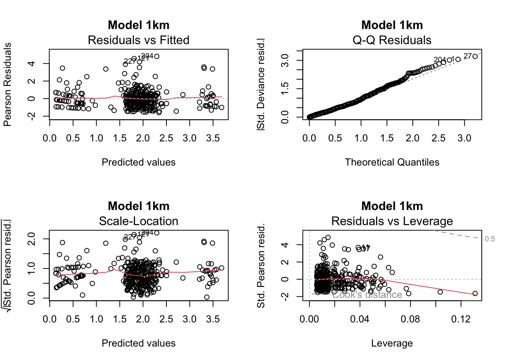
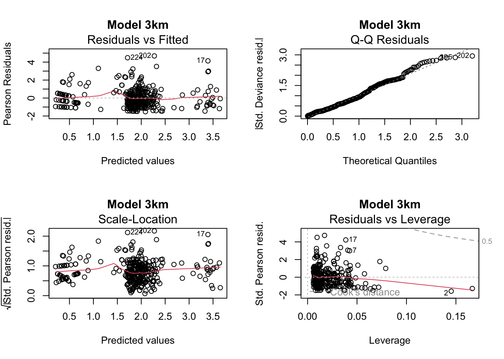
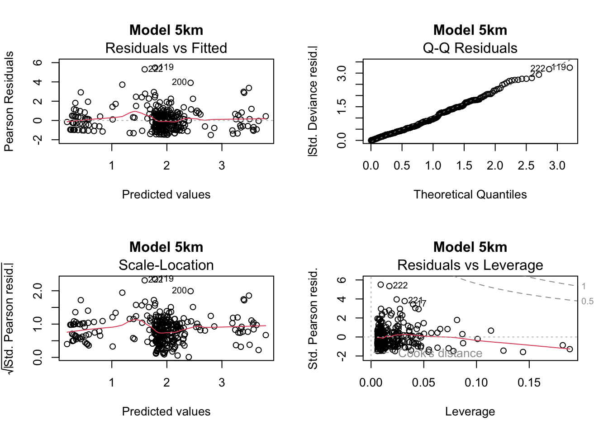
par(mfrow = c(1, 1))
chat_values <- sapply(models_GLM, function(m) deviance(m) / df.residual(m))
names(chat_values) <- model_names
chat_values 1km 3km 5km
1.085849 1.093804 1.104432 Advanced diagnostics of the model residuals
simulationOutput <- simulateResiduals(fittedModel = total_1km_m4, plot = TRUE)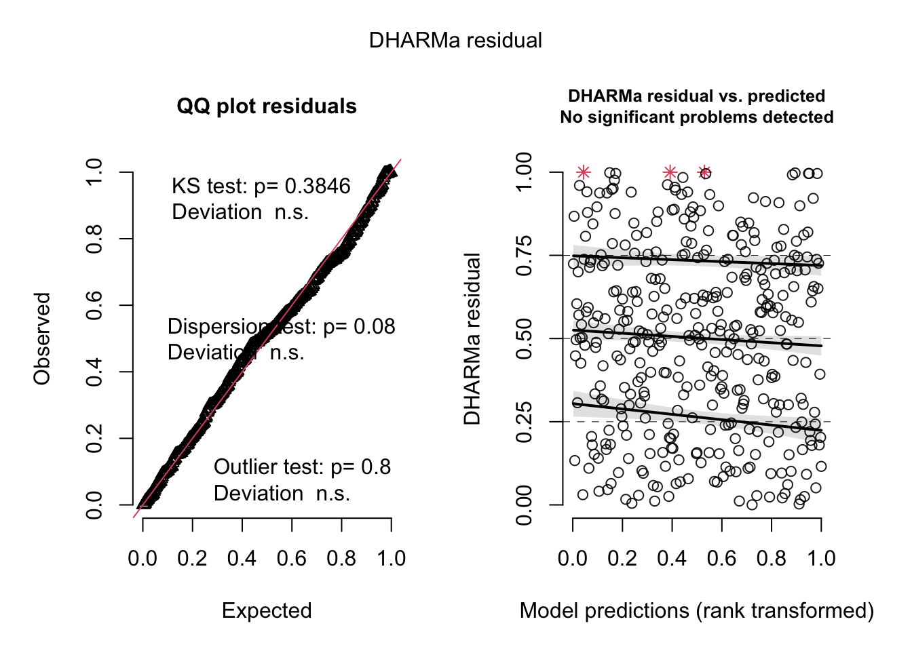
simulationOutput <- simulateResiduals(fittedModel = total_3km_m3, plot = TRUE)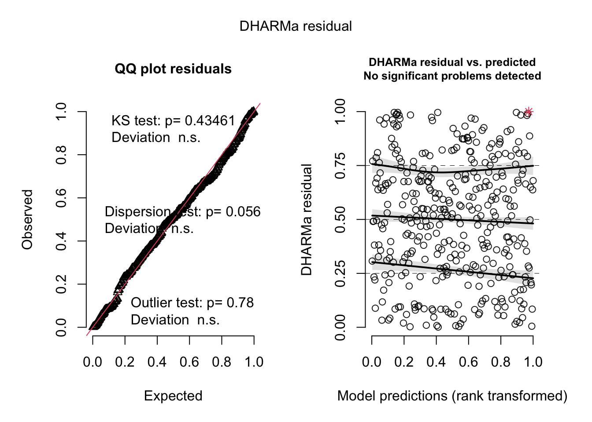
simulationOutput <- simulateResiduals(fittedModel = total_5km_m3, plot = TRUE)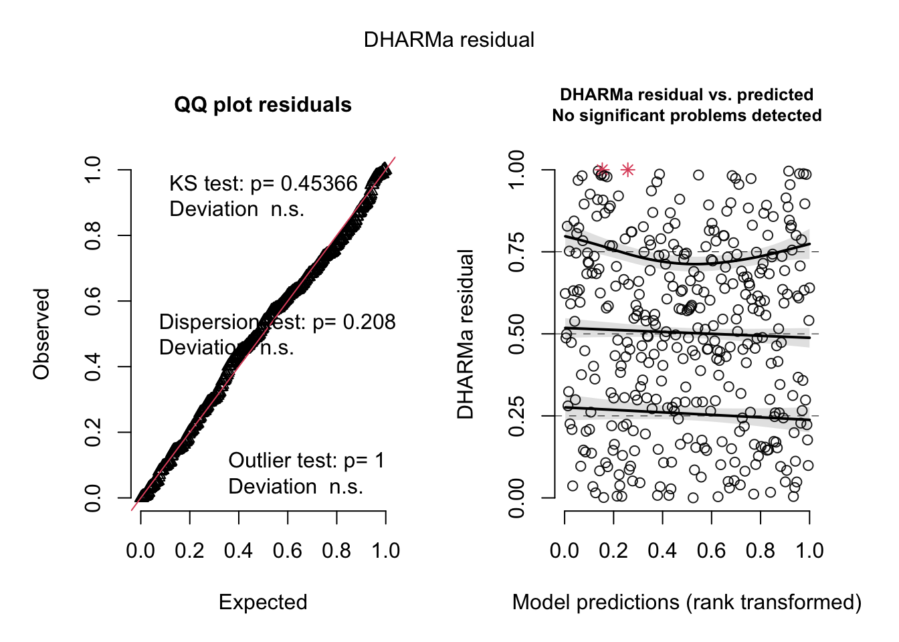
Summary
summary(total_1km_m4)
Call:
glm.nb(formula = total_roadkill_count ~ traffic + pavement +
urban_area + cult_land + savanna, data = d1km_sum, init.theta = 3.355735941,
link = log)
Coefficients:
Estimate Std. Error z value Pr(>|z|)
(Intercept) 0.86169 0.14849 5.803 6.51e-09 ***
traffic.L 1.12918 0.09128 12.371 < 2e-16 ***
traffic.Q 0.57746 0.07199 8.022 1.04e-15 ***
pavement1 1.53093 0.15134 10.116 < 2e-16 ***
urban_area -0.28056 0.04263 -6.581 4.67e-11 ***
cult_land -0.09536 0.04503 -2.118 0.0342 *
savanna -0.20642 0.04537 -4.550 5.36e-06 ***
---
Signif. codes: 0 '***' 0.001 '**' 0.01 '*' 0.05 '.' 0.1 ' ' 1
(Dispersion parameter for Negative Binomial(3.3557) family taken to be 1)
Null deviance: 803.81 on 369 degrees of freedom
Residual deviance: 394.16 on 363 degrees of freedom
AIC: 2050.5
Number of Fisher Scoring iterations: 1
Theta: 3.356
Std. Err.: 0.379
2 x log-likelihood: -2034.463 summary(total_3km_m3)
Call:
glm.nb(formula = total_roadkill_count ~ traffic + pavement +
savanna + urban_area + forest + road_length, data = d3km_sum,
init.theta = 3.265092846, link = log)
Coefficients:
Estimate Std. Error z value Pr(>|z|)
(Intercept) 0.87078 0.15066 5.780 7.48e-09 ***
traffic.L 1.12092 0.09388 11.940 < 2e-16 ***
traffic.Q 0.56971 0.06930 8.221 < 2e-16 ***
pavement1 1.52605 0.15196 10.042 < 2e-16 ***
savanna -0.08495 0.03855 -2.203 0.0276 *
urban_area -0.25050 0.04228 -5.925 3.13e-09 ***
forest 0.09023 0.03946 2.286 0.0222 *
road_length 0.06654 0.03580 1.858 0.0631 .
---
Signif. codes: 0 '***' 0.001 '**' 0.01 '*' 0.05 '.' 0.1 ' ' 1
(Dispersion parameter for Negative Binomial(3.2651) family taken to be 1)
Null deviance: 784.85 on 366 degrees of freedom
Residual deviance: 393.38 on 359 degrees of freedom
AIC: 2046.1
Number of Fisher Scoring iterations: 1
Theta: 3.265
Std. Err.: 0.366
2 x log-likelihood: -2028.137 summary(total_5km_m3)
Call:
glm.nb(formula = total_roadkill_count ~ traffic + pavement +
road_length + forest + urban_area + savanna, data = d5km_sum,
init.theta = 3.104198301, link = log)
Coefficients:
Estimate Std. Error z value Pr(>|z|)
(Intercept) 0.87255 0.14938 5.841 5.18e-09 ***
traffic.L 1.13982 0.09825 11.602 < 2e-16 ***
traffic.Q 0.60949 0.07197 8.469 < 2e-16 ***
pavement1 1.55440 0.15158 10.255 < 2e-16 ***
road_length 0.10774 0.03614 2.981 0.00287 **
forest 0.10312 0.04218 2.445 0.01449 *
urban_area -0.22852 0.04187 -5.458 4.81e-08 ***
savanna -0.07022 0.04074 -1.724 0.08478 .
---
Signif. codes: 0 '***' 0.001 '**' 0.01 '*' 0.05 '.' 0.1 ' ' 1
(Dispersion parameter for Negative Binomial(3.1042) family taken to be 1)
Null deviance: 777.05 on 363 degrees of freedom
Residual deviance: 395.17 on 356 degrees of freedom
AIC: 2041.2
Number of Fisher Scoring iterations: 1
Theta: 3.104
Std. Err.: 0.347
2 x log-likelihood: -2023.202 summary_1km_sum <- summary(total_1km_m4)
summary_3km_sum <- summary(total_3km_m3)
summary_5km_sum <- summary(total_5km_m3)
extract_est_p <- function(model_summary) {
coef_table <- model_summary$coefficients
data.frame(
Term = rownames(coef_table),
Estimate = coef_table[, "Estimate"],
P_value = coef_table[, "Pr(>|z|)"],
row.names = NULL
)
}
df_1km_sum <- extract_est_p(summary_1km_sum)
df_3km_sum <- extract_est_p(summary_3km_sum)
df_5km_sum <- extract_est_p(summary_5km_sum)
GLM_scale_comparison <- df_1km_sum %>%
rename(Estimate_1km = Estimate, P_1km = P_value) %>%
full_join(df_3km_sum %>% rename(Estimate_3km = Estimate, P_3km = P_value), by = "Term") %>%
full_join(df_5km_sum %>% rename(Estimate_5km = Estimate, P_5km = P_value), by = "Term")
GLM_scale_comparison Term Estimate_1km P_1km Estimate_3km P_3km Estimate_5km
1 (Intercept) 0.86168734 6.508918e-09 0.87077551 7.479045e-09 0.87255259
2 traffic.L 1.12918212 3.759111e-35 1.12092292 7.283471e-33 1.13981993
3 traffic.Q 0.57746179 1.040993e-15 0.56971078 2.026428e-16 0.60949099
4 pavement1 1.53092983 4.703616e-24 1.52604883 9.930132e-24 1.55439711
5 urban_area -0.28055794 4.673442e-11 -0.25049720 3.126391e-09 -0.22852355
6 cult_land -0.09536195 3.419241e-02 NA NA NA
7 savanna -0.20642276 5.362968e-06 -0.08494518 2.756818e-02 -0.07022248
8 forest NA NA 0.09022897 2.223214e-02 0.10312374
9 road_length NA NA 0.06654221 6.310264e-02 0.10773605
P_5km
1 5.182618e-09
2 4.044971e-31
3 2.477029e-17
4 1.127837e-24
5 4.814821e-08
6 NA
7 8.477630e-02
8 1.448584e-02
9 2.872694e-03Plots
1km
Let’s assess which is the best set of graphs to represent the results found
Raw data
- Pavement and traffic
The pavement and traffic plots are the same across all scales, so we will generate them only once using the 1 km dataset.
plot_pav <- d1km_raw_sum |>
ggplot(aes(x = factor(pavement), y = total_roadkill_count, fill = factor(pavement))) +
geom_boxplot(alpha = 0.5) +
scale_fill_manual(
values = c("0" = "darkgoldenrod3", "1" = "gray40"),
labels = c("Unpaved", "Paved")
) +
scale_x_discrete(labels = c("0" = "Unpaved", "1" = "Paved")) +
theme(
panel.background = element_blank(),
axis.ticks = element_line(),
axis.title.x = element_text(size = 12),
axis.title.y = element_text(size = 12),
axis.text = element_text(size = 10),
axis.line = element_line()
) +
labs(
x = "Pavement",
y = "Roadkill Number",
fill = "Pavement"
)
d1km_raw_sum$traffic <- factor(d1km_raw_sum$traffic, levels = c("low", "medium", "high"), ordered = TRUE)
plot_traffic <- d1km_raw_sum|>
ggplot(aes(x = factor(traffic), y = total_roadkill_count, fill = factor(traffic))) +
geom_boxplot(alpha = 0.5) +
scale_fill_manual(
values = c("low" = "#FFDDC1", "medium" = "#FFD700", "high" = "#E63946"),
labels = c("Low", "Medium", "High")
) +
scale_x_discrete(labels = c("low" = "Low", "medium" = "Medium", "high" = "High")) +
theme(
panel.background = element_blank(),
axis.ticks = element_line(),
axis.title.x = element_text(size = 12),
axis.title.y = element_text(size = 12),
axis.text = element_text(size = 10),
axis.line = element_line()
) +
labs(
x = "Traffic Level",
y = "Roadkill Number",
fill = "Traffic Level"
)- Urban area, cultivated land, and savanna
all appear to have a negative effect on roadkill numbers, according to the summar
vars <- c("urban_area", "savanna", "cult_land")
labels <- c("Urban Area (km²)", "Savanna Area (km²)", "Cultivated Land (km²)")
make_plot <- function(var, label_x) {
ggplot(d1km_raw_sum, aes_string(x = var, y = "total_roadkill_count")) +
geom_point(alpha = 1) +
geom_smooth(method = "glm.nb", formula = y ~ x, se = TRUE, color = "red") +
labs(x = label_x, y = "Roadkill Number") +
theme(
panel.background = element_blank(),
axis.ticks = element_line(),
axis.title = element_text(size = 12),
axis.text = element_text(size = 10),
axis.line = element_line()
)
}
plots <- map2(vars, labels, make_plot)Warning: `aes_string()` was deprecated in ggplot2 3.0.0.
ℹ Please use tidy evaluation idioms with `aes()`.
ℹ See also `vignette("ggplot2-in-packages")` for more information.final_plot <-
(plot_pav | plot_traffic | patchwork::plot_spacer()) /
(plots[[1]] | plots[[2]] | plots[[3]])
# Mostra o painel
final_plot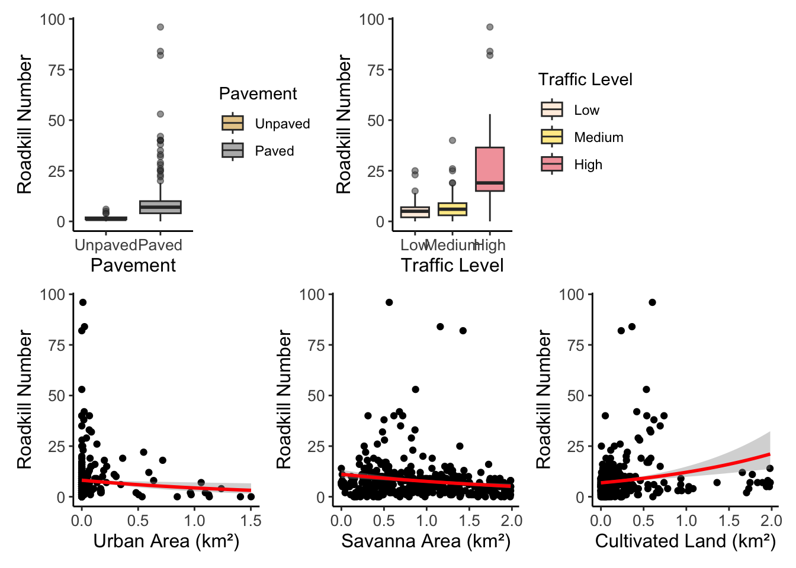
However, when plotting the raw data, cultivated land appears to have a positive effect.
Transformed data
- Pavement and traffic
plot_pav_t <- d1km_raw_sum |>
ggplot(aes(x = factor(pavement), y = total_roadkill_count, fill = factor(pavement))) +
geom_boxplot(alpha = 0.5) +
scale_y_continuous(trans = 'log10') +
scale_fill_manual(
values = c("0" = "darkgoldenrod3", "1" = "gray40"),
labels = c("Unpaved", "Paved")
) +
scale_x_discrete(labels = c("0" = "Unpaved", "1" = "Paved")) +
theme(
panel.background = element_blank(),
axis.ticks = element_line(),
axis.title.x = element_text(size = 12),
axis.title.y = element_text(size = 12),
axis.text = element_text(size = 10),
axis.line = element_line()
) +
labs(
x = "Pavement",
y = "Roadkill Number",
fill = "Pavement"
)
plot_traffic_t <- d1km_raw_sum|>
ggplot(aes(x = factor(traffic), y = total_roadkill_count, fill = factor(traffic))) +
geom_boxplot(alpha = 0.5) +
scale_y_continuous(trans = 'log10') +
scale_fill_manual(
values = c("low" = "#FFDDC1", "medium" = "#FFD700", "high" = "#E63946"),
labels = c("Low", "Medium", "High")
) +
scale_x_discrete(labels = c("low" = "Low", "medium" = "Medium", "high" = "High")) +
theme(
panel.background = element_blank(),
axis.ticks = element_line(),
axis.title.x = element_text(size = 12),
axis.title.y = element_text(size = 12),
axis.text = element_text(size = 10),
axis.line = element_line()
) +
labs(
x = "Traffic Level",
y = "Roadkill Number",
fill = "Traffic Level"
)- Urban area, cultivated land, and savanna (log10)
make_plot_t <- function(var, label_x) {
ggplot(d1km_sum, aes_string(x = var, y = "total_roadkill_count")) +
geom_point(alpha = 1) +
geom_smooth(method = "glm.nb", formula = y ~ x, se = TRUE, color = "red") +
labs(x = label_x, y = "Roadkill Number") +
theme(
panel.background = element_blank(),
axis.ticks = element_line(),
axis.title = element_text(size = 12),
axis.text = element_text(size = 10),
axis.line = element_line()
)
}
plots_t <- map2(vars, labels, make_plot_t)
final_plot_t <-
(plot_pav_t | plot_traffic_t | patchwork::plot_spacer()) /
(plots_t[[1]] | plots_t[[2]] | plots_t[[3]])
final_plot_tWarning in scale_y_continuous(trans = "log10"): log-10 transformation
introduced infinite values.Warning: Removed 19 rows containing non-finite outside the scale range
(`stat_boxplot()`).Warning in scale_y_continuous(trans = "log10"): log-10 transformation
introduced infinite values.Warning: Removed 19 rows containing non-finite outside the scale range
(`stat_boxplot()`).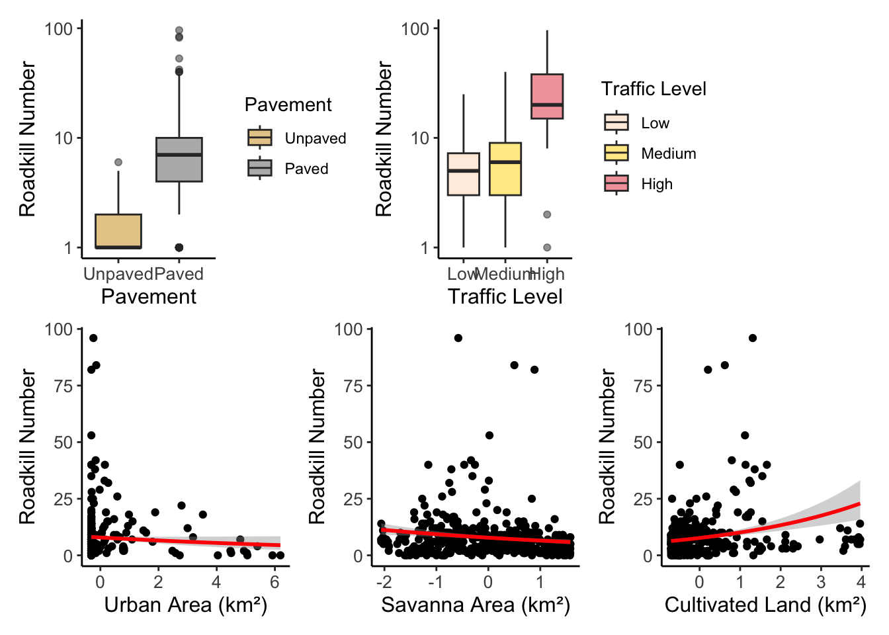
Model-predicted responses to environmental variables
landscape_vars_1km <- c("cult_land", "savanna", "urban_area")
landscape_plots <- list()
for (var in landscape_vars_1km) {
landscape_effect <- ggpredict(total_1km_m4, terms = var, bias_correction = TRUE)
x_label <- paste("log10 of", var, "(km²)")
plot_predict <- ggplot(landscape_effect, aes(x = x, y = predicted)) +
geom_point(size = 3, color = "#FFD700") +
geom_line(color = "#FFD700") +
labs(title = paste("Effect of", var, "on Roadkill number"),
x = x_label,
y = "Predicted roadkill") +
theme_minimal()
landscape_plots[[var]] <- plot_predict
}Bias-correction is currently only supported for mixed or gee models. No
bias-correction is applied.
Bias-correction is currently only supported for mixed or gee models. No
bias-correction is applied.
Bias-correction is currently only supported for mixed or gee models. No
bias-correction is applied.final_plot_predict_1km <- (plot_pav_t | plot_traffic_t) /
(landscape_plots$cult_land | landscape_plots$savanna | landscape_plots$urban_area)
final_plot_predict_1kmWarning in scale_y_continuous(trans = "log10"): log-10 transformation
introduced infinite values.Warning: Removed 19 rows containing non-finite outside the scale range
(`stat_boxplot()`).Warning in scale_y_continuous(trans = "log10"): log-10 transformation
introduced infinite values.Warning: Removed 19 rows containing non-finite outside the scale range
(`stat_boxplot()`).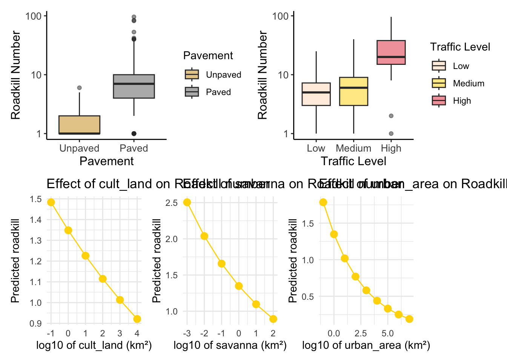
I believe that the graph with the model’s prediction looks better, although it is a bit harder to interpret. However, since the other graphs show the relationship between the proportion of cultivated land and the number of roadkills in an opposite relationship to what is shown in the model’s summary, let’s use only this set of graphs for the other scales
3km
Model-predicted responses to environmental variables
landscape_vars_3km <- c("road_length", "savanna", "urban_area", "forest" )
landscape_plots <- list()
for (var in landscape_vars_3km) {
landscape_effect <- ggpredict(total_3km_m3, terms = var, bias_correction = TRUE)
x_label <- paste("log10 of", var, "(km²)")
plot_predict <- ggplot(landscape_effect, aes(x = x, y = predicted)) +
geom_point(size = 3, color = "#1f77b4") +
geom_line(color = "#1f77b4") +
labs(x = x_label,
y = "Predicted roadkill") +
theme_minimal()
landscape_plots[[var]] <- plot_predict
}Bias-correction is currently only supported for mixed or gee models. No
bias-correction is applied.
Bias-correction is currently only supported for mixed or gee models. No
bias-correction is applied.
Bias-correction is currently only supported for mixed or gee models. No
bias-correction is applied.
Bias-correction is currently only supported for mixed or gee models. No
bias-correction is applied.final_plot_predict_3km <- (plot_pav_t | plot_traffic_t) /
(landscape_plots$road_length | landscape_plots$savanna |landscape_plots$fores | landscape_plots$urban_area)
final_plot_predict_3kmWarning in scale_y_continuous(trans = "log10"): log-10 transformation
introduced infinite values.Warning: Removed 19 rows containing non-finite outside the scale range
(`stat_boxplot()`).Warning in scale_y_continuous(trans = "log10"): log-10 transformation
introduced infinite values.Warning: Removed 19 rows containing non-finite outside the scale range
(`stat_boxplot()`).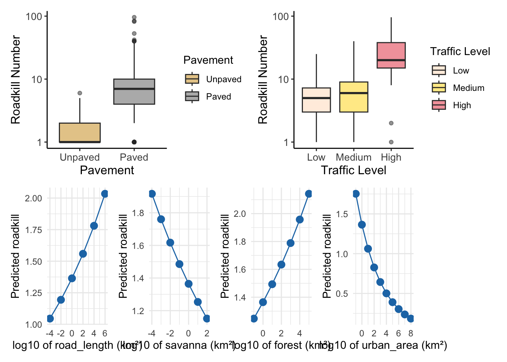
5km
Model-predicted responses to environmental variables
landscape_vars_5km <- c("road_length", "savanna", "urban_area", "forest" )
landscape_plots <- list()
for (var in landscape_vars_5km) {
landscape_effect <- ggpredict(total_5km_m3, terms = var, bias_correction = TRUE)
x_label <- paste("log10 of", var, "(km²)")
plot_predict <- ggplot(landscape_effect, aes(x = x, y = predicted)) +
geom_point(size = 3, color = "#9B59B6") +
geom_line(color = "#9B59B6") +
labs(x = x_label,
y = "Predicted roadkill") +
theme_minimal()
landscape_plots[[var]] <- plot_predict
}Bias-correction is currently only supported for mixed or gee models. No
bias-correction is applied.
Bias-correction is currently only supported for mixed or gee models. No
bias-correction is applied.
Bias-correction is currently only supported for mixed or gee models. No
bias-correction is applied.
Bias-correction is currently only supported for mixed or gee models. No
bias-correction is applied.final_plot_predict_5km <- (plot_pav_t | plot_traffic_t) /
(landscape_plots$road_length | landscape_plots$savanna |landscape_plots$fores | landscape_plots$urban_area)
final_plot_predict_5kmWarning in scale_y_continuous(trans = "log10"): log-10 transformation
introduced infinite values.Warning: Removed 19 rows containing non-finite outside the scale range
(`stat_boxplot()`).Warning in scale_y_continuous(trans = "log10"): log-10 transformation
introduced infinite values.Warning: Removed 19 rows containing non-finite outside the scale range
(`stat_boxplot()`).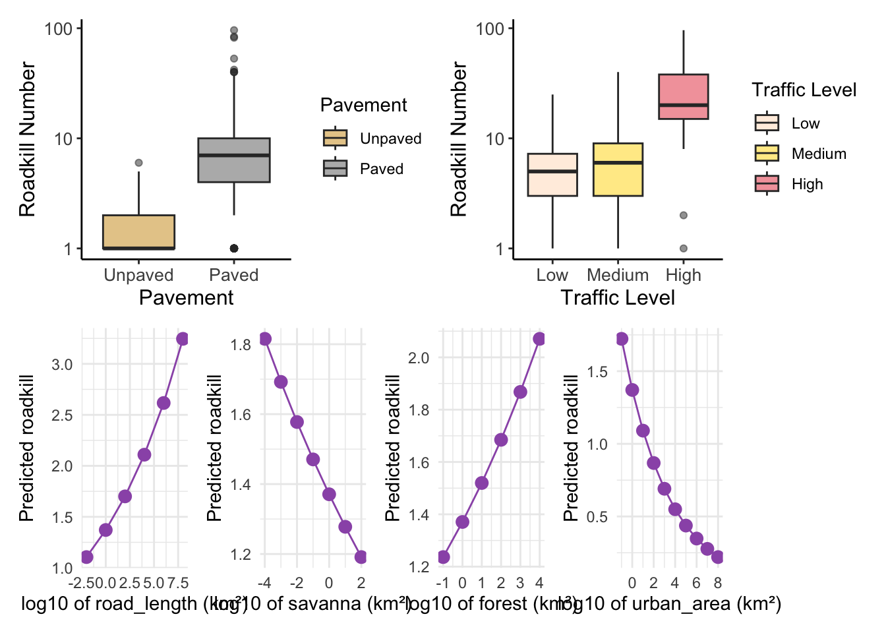
Number of roadkill: taxa and sazonality
GLMM - Negative binomial
format_data_GLMM <- function(df) {
df$polygon <- as.factor(df$polygon)
df$pavement <- factor(df$pavement, levels = c("0", "1"))
df$traffic <- factor(df$traffic, levels = c("low", "medium", "high"), ordered = TRUE)
df$taxa <- factor(df$taxa, levels = c("amp","rep", "bird", "mam"))
df$season <- factor(df$season, levels = c("dry","rainy"))
df$water <- as.numeric(df$water)
df$road_length <- as.numeric(df$road_length)
df$shrubby <- as.numeric(df$shrubby)
df$urban_area <- as.numeric(df$urban_area)
df$cult_land <- as.numeric(df$cult_land)
df$savanna <- as.numeric(df$savanna)
df$forest <- as.numeric(df$forest)
df$p <- as.numeric(df$savanna)
return(df)
}
d1km <- format_data_GLMM(d1km)
d3km <- format_data_GLMM(d3km)
d5km <- format_data_GLMM(d5km)1km
taxa_1km_m0 <- glmmTMB(roadkill_count ~ pavement * taxa + traffic + season + cult_land + urban_area + forest + savanna + water + shrubby + road_length + (1 | polygon),
family = nbinom2,
data = d1km)3km
taxa_3km_m0 <- glmmTMB(roadkill_count ~ pavement * taxa + traffic + season + cult_land + urban_area + forest + savanna + water + shrubby + road_length + (1 | polygon),
family = nbinom2,
data = d3km)5km
taxa_5km_m0 <- glmmTMB(roadkill_count ~ pavement * taxa + traffic + season + cult_land + urban_area + forest + savanna + water + shrubby + road_length + (1 | polygon),
family = nbinom2,
data = d5km)R² values
Calculation of Pseudo R² (Nagelkerke)
models_GLMM <- list(
taxa_1km_m0 = taxa_1km_m0,
taxa_3km_m0 = taxa_3km_m0,
taxa_5km_m0 = taxa_5km_m0
)
r2_results <- lapply(models_GLMM, r2_nakagawa)
cat("\nPseudo R² of the models:\n")
Pseudo R² of the models:print(r2_results)$taxa_1km_m0
# R2 for Mixed Models
Conditional R2: 0.447
Marginal R2: 0.323
$taxa_3km_m0
# R2 for Mixed Models
Conditional R2: 0.440
Marginal R2: 0.310
$taxa_5km_m0
# R2 for Mixed Models
Conditional R2: 0.449
Marginal R2: 0.309Advanced diagnostics of the model residuals
simulationOutput <- simulateResiduals(fittedModel = taxa_1km_m0, plot = TRUE)DHARMa:testOutliers with type = binomial may have inflated Type I error rates for integer-valued distributions. To get a more exact result, it is recommended to re-run testOutliers with type = 'bootstrap'. See ?testOutliers for details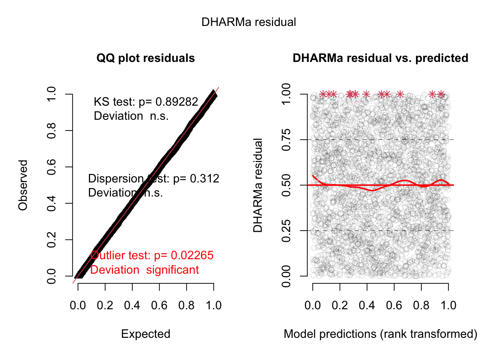
simulationOutput <- simulateResiduals(fittedModel = taxa_3km_m0, plot = TRUE)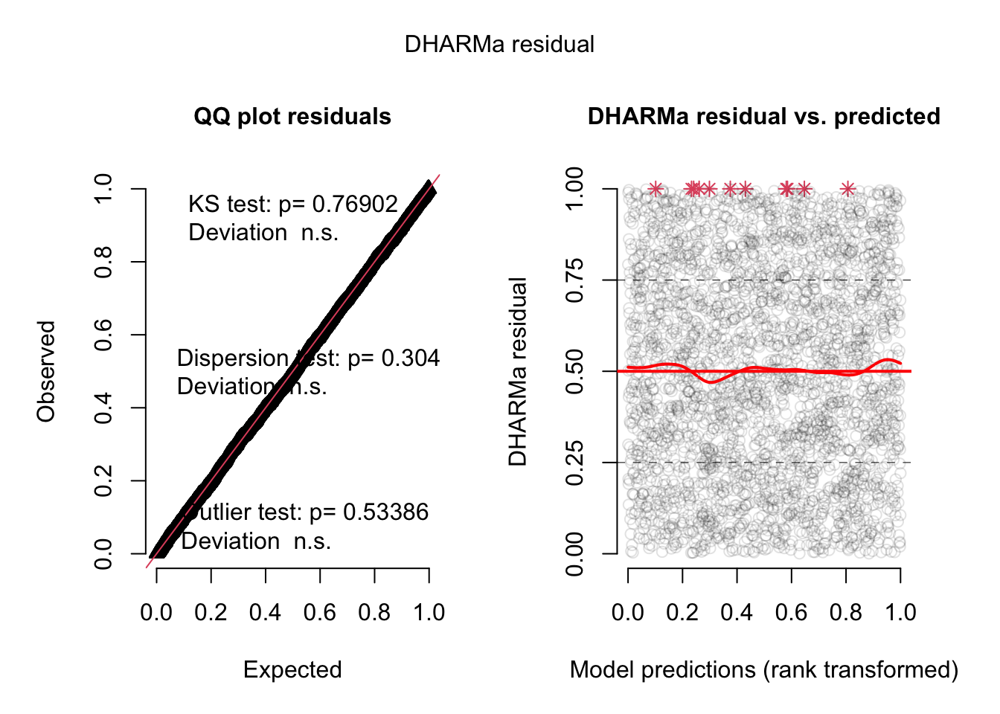
simulationOutput <- simulateResiduals(fittedModel = taxa_5km_m0, plot = TRUE)DHARMa:testOutliers with type = binomial may have inflated Type I error rates for integer-valued distributions. To get a more exact result, it is recommended to re-run testOutliers with type = 'bootstrap'. See ?testOutliers for details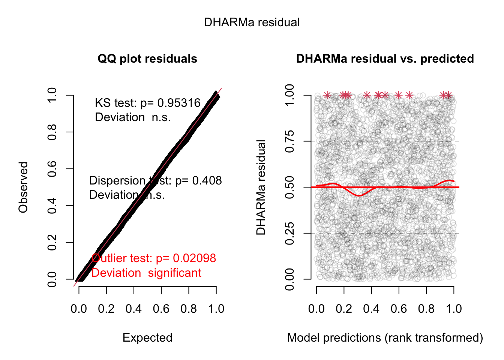
Since the outliers in the datasets are real data (and not errors) primarily related to seasonality, these data will be retained even if the model is not able to represent them very well.
Summary
# Function to extract estimates and p-values, adding an asterisk for significance
extract_est_p <- function(model_summary) {
coef_table <- model_summary$coefficients$cond # Accessing coefficients
# Create the table with estimates and p-values
result <- data.frame(
Term = rownames(coef_table),
Estimate = coef_table[, "Estimate"],
P_value = coef_table[, "Pr(>|z|)"],
row.names = NULL
)
# Add an asterisk to p-values that are significant (p < 0.05)
result$P_value <- ifelse(result$P_value < 0.05, paste(result$P_value, "*", sep=""), result$P_value)
return(result)
}
# Extract data for the three models
df_1km <- extract_est_p(summary(taxa_1km_m0))
df_3km <- extract_est_p(summary(taxa_3km_m0))
df_5km <- extract_est_p(summary(taxa_5km_m0))
# Comparison across scales
GLMM_scale_comparison <- df_1km %>%
rename(Estimate_1km = Estimate, P_1km = P_value) %>%
full_join(df_3km %>% rename(Estimate_3km = Estimate, P_3km = P_value), by = "Term") %>%
full_join(df_5km %>% rename(Estimate_5km = Estimate, P_5km = P_value), by = "Term")
# Display the comparison table with asterisks for significant p-values
GLMM_scale_comparison Term Estimate_1km P_1km Estimate_3km
1 (Intercept) -1.371464595 4.83666098700055e-08* -1.31876922
2 pavement1 1.354032867 1.12729224666042e-07* 1.31929639
3 taxarep -0.142282009 0.67758325239058 -0.21859770
4 taxabird -0.028331463 0.932338006427453 -0.06222133
5 taxamam -0.443769275 0.232781562871888 -0.47113619
6 traffic.L 1.067004720 3.46285373264564e-31* 1.09207691
7 traffic.Q 0.527500873 1.5117181595587e-12* 0.54905749
8 seasonrainy 0.308423015 7.09611642478015e-10* 0.30483518
9 cult_land -0.070557293 0.123338540517713 -0.01101422
10 urban_area -0.316348347 1.65068806737414e-12* -0.28628866
11 forest -0.006687915 0.859792649755936 0.07688007
12 savanna -0.184789440 8.61500679258319e-05* -0.08768001
13 water 0.033410198 0.323308747498995 0.05289200
14 shrubby -0.071765224 0.114336543459419 -0.04119905
15 road_length 0.054259772 0.161619830151198 0.07477562
16 pavement1:taxarep -0.052613424 0.880572525219733 0.02023970
17 pavement1:taxabird 0.248596666 0.465993473159678 0.29044073
18 pavement1:taxamam 0.482259554 0.202847051107338 0.50900106
P_3km Estimate_5km P_5km
1 1.12405633695864e-07* -1.27178523 1.64726508732981e-07*
2 1.82208116289844e-07* 1.26534756 3.15802212938161e-07*
3 0.526493571164108 -0.25438083 0.449796379677468
4 0.851321752891221 -0.19938198 0.547757201883857
5 0.203390364446111 -0.55350317 0.131067285049484
6 7.94836469897303e-28* 1.10525542 5.52372761087828e-25*
7 5.05976909759541e-13* 0.56652780 1.17734472819166e-12*
8 1.49011217183763e-09* 0.31617197 5.06407066605247e-10*
9 0.838252428594515 0.02034147 0.701605963705215
10 5.96583304385389e-10* -0.26576535 6.04093577621799e-09*
11 0.0887220734848294 0.09968404 0.0480166694322663*
12 0.11056060987862 -0.06156999 0.264456094135544
13 0.146644306208703 0.06302950 0.106649367400041
14 0.310426500955283 -0.04617115 0.260074679852243
15 0.0351920677742152* 0.11974674 0.000931309455736103*
16 0.954293591278449 0.07967533 0.817333753926652
17 0.392164741011497 0.44716588 0.187535808111879
18 0.177331223067328 0.60234772 0.107005824547447Plots
Pavement on Roadkill by Vertebrate Group
At none of the spatial scales was the p-value significant for the different taxa, not even when evaluating their interaction with pavement. Therefore, the plots are merely illustrative and should be interpreted with caution
plot_pav_taxa_effect <- function(model, titulo = "Pavement effect") {
plot_data <- ggpredict(model, terms = c("pavement", "taxa"), bias_correction = TRUE)
p <- ggplot(plot_data, aes(x = x, y = predicted, color = group)) +
geom_point(size = 2) +
geom_line(aes(group = group)) +
geom_ribbon(aes(ymin = conf.low, ymax = conf.high, fill = group), alpha = 0.2, color = NA) +
labs(
title = titulo,
x = "0 = unpaver, 1 = paved",
y = "Predicted roadkill number",
color = "Taxa",
fill = "Taxa"
) +
theme_bw() +
theme(
plot.title = element_text(hjust = 0.5),
legend.position = "right"
) +
scale_color_brewer(palette = "Dark2") +
scale_fill_brewer(palette = "Dark2")
return(p)
}
plot_pav_taxa_effect(taxa_1km_m0, "Pavement x Taxa (1 km)")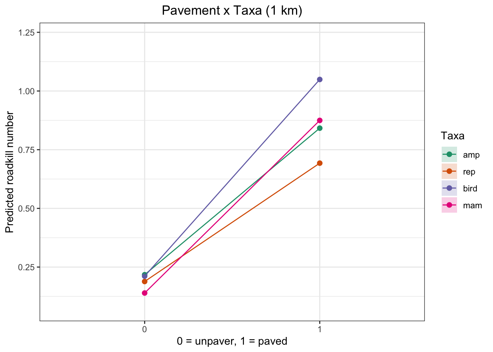
plot_pav_taxa_effect(taxa_3km_m0, "Pavement x Taxa (3 km)")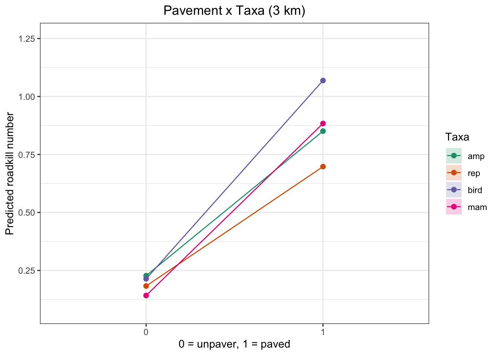
plot_pav_taxa_effect(taxa_5km_m0, "Pavement x Taxa (5 km)")Traffic on Roadkill
traffic_1km <- ggpredict(taxa_1km_m0, terms = "traffic", bias_correction = TRUE) %>%
mutate(Scale = "1km")
traffic_3km <- ggpredict(taxa_3km_m0, terms = "traffic", bias_correction = TRUE) %>%
mutate(Scale = "3km")
traffic_5km <- ggpredict(taxa_5km_m0, terms = "traffic", bias_correction = TRUE) %>%
mutate(Scale = "5km")
traffic_all <- bind_rows(traffic_1km, traffic_3km, traffic_5km) %>%
filter(!is.na(x), !is.na(predicted))
ggplot(traffic_all, aes(x = x, y = predicted, fill = Scale)) +
geom_col(position = position_dodge(width = 0.9), alpha = 0.7) +
geom_errorbar(aes(ymin = conf.low, ymax = conf.high),
position = position_dodge(width = 0.9), width = 0.2) +
labs(title = "Effect of Traffic on Roadkill by Scale",
x = "Traffic Level",
y = "Predicted Roadkill") +
theme_bw() +
scale_fill_manual(values = c("1km" = "#FFD700",
"3km" = "#1f77b4",
"5km" = "#9B59B6"))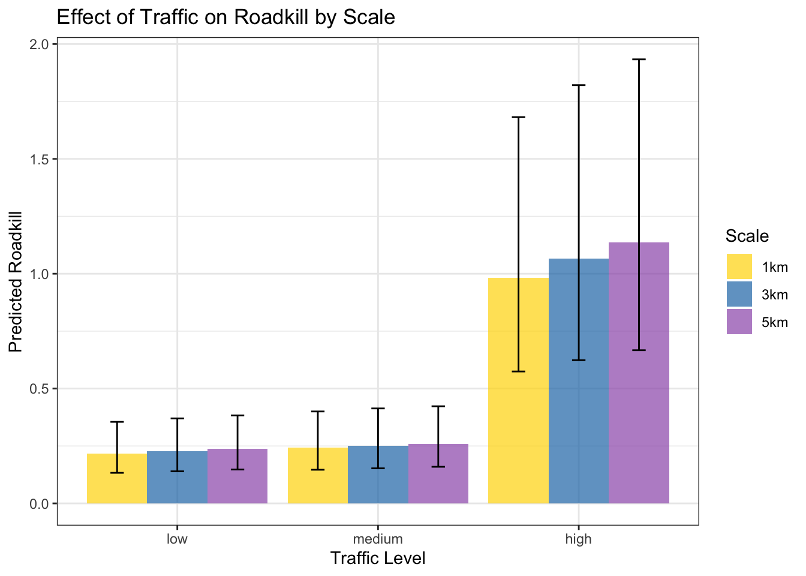
Seasonality and its effect on roadkilll
d1km$season <- factor(d1km$season, levels = c("dry", "rainy"))
d3km$season <- factor(d3km$season, levels = c("dry", "rainy"))
d5km$season <- factor(d5km$season, levels = c("dry", "rainy"))
season_1km <- ggpredict(taxa_1km_m0, terms = "season", bias_correction = TRUE) %>%
mutate(Scale = "1km")
season_3km <- ggpredict(taxa_3km_m0, terms = "season", bias_correction = TRUE) %>%
mutate(Scale = "3km")
season_5km <- ggpredict(taxa_5km_m0, terms = "season", bias_correction = TRUE) %>%
mutate(Scale = "5km")
# Junta os dados
season_all <- bind_rows(season_1km, season_3km, season_5km)
# Remove possíveis NAs (opcional, por segurança)
season_all <- season_all %>% filter(!is.na(predicted))
# Gráfico
ggplot(season_all, aes(x = x, y = predicted, color = Scale, group = Scale)) +
geom_point(position = position_dodge(width = 0.4), size = 3) +
geom_line(position = position_dodge(width = 0.4)) +
geom_errorbar(aes(ymin = conf.low, ymax = conf.high),
position = position_dodge(width = 0.4), width = 0.2) +
labs(title = "Effect of Season on Roadkill by Scale",
x = "Season",
y = "Predicted Roadkill") +
scale_color_manual(values = c("1km" = "#FFD700",
"3km" = "#1f77b4",
"5km" = "#9B59B6")) +
theme_bw()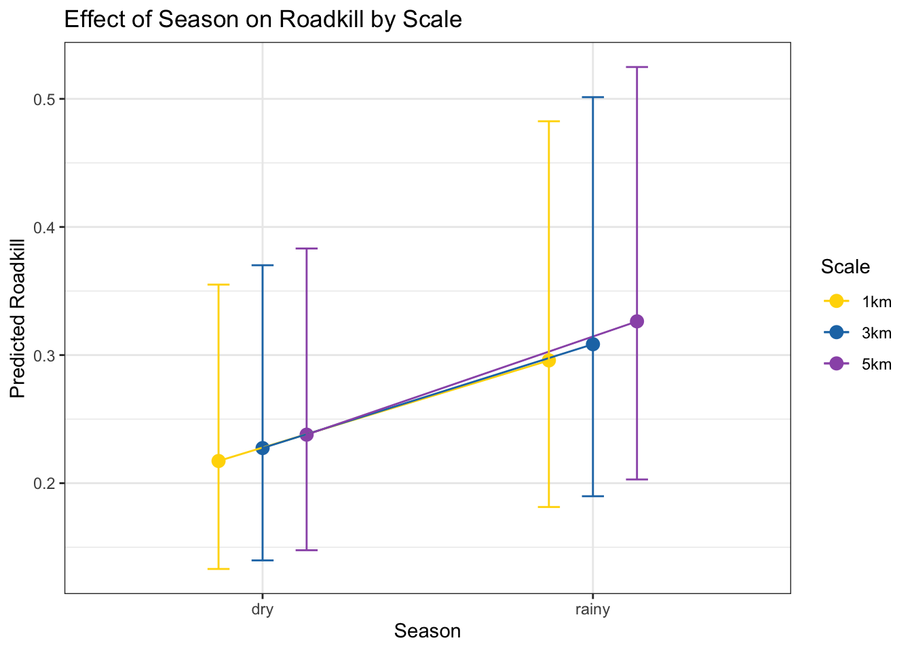
Landscape Variables on Roadkil
landscape_vars <- c("cult_land", "water", "shrubby", "urban_area", "forest", "savanna")
landscape_labels <- c("Cultivated land", "Water", "Shrubby", "Urban area", "Forest", "Savanna")
plot_list <- list()
for (i in 1:length(landscape_vars)) {
var <- landscape_vars[i]
label <- landscape_labels[i]
landscape_effect <- ggpredict(taxa_1km_m0, terms = var, bias_correction = TRUE)
p <- ggplot(landscape_effect, aes(x = x, y = predicted)) +
geom_point(size = 2, color = "#FFD700") +
geom_line(color = "black") +
labs(x = label, y = NULL) +
scale_y_continuous(limits = c(0, 1)) +
theme_minimal() +
theme(
plot.title = element_blank(),
panel.grid.major = element_blank(),
panel.grid.minor = element_blank(),
panel.border = element_blank(),
axis.line = element_line(color = "black"),
axis.text = element_text(size = 12),
axis.title.x = element_text(size = 14),
axis.title.y = element_text(size = 14),
)
plot_list[[var]] <- p
}
final_plot <- wrap_plots(plot_list, ncol = 3, byrow = TRUE) +
plot_annotation(title = NULL, tag_levels = NULL) &
theme(
axis.title.y = element_text(angle = 90, vjust =0.5),
plot.margin = margin(10, 10, 10, 40)
)
y_label <- ggdraw() + draw_label("Predicted Roadkill - 1km", angle = 90, hjust = 0.5)
plot_grid(y_label, final_plot, ncol = 2, rel_widths = c(0.05, 1))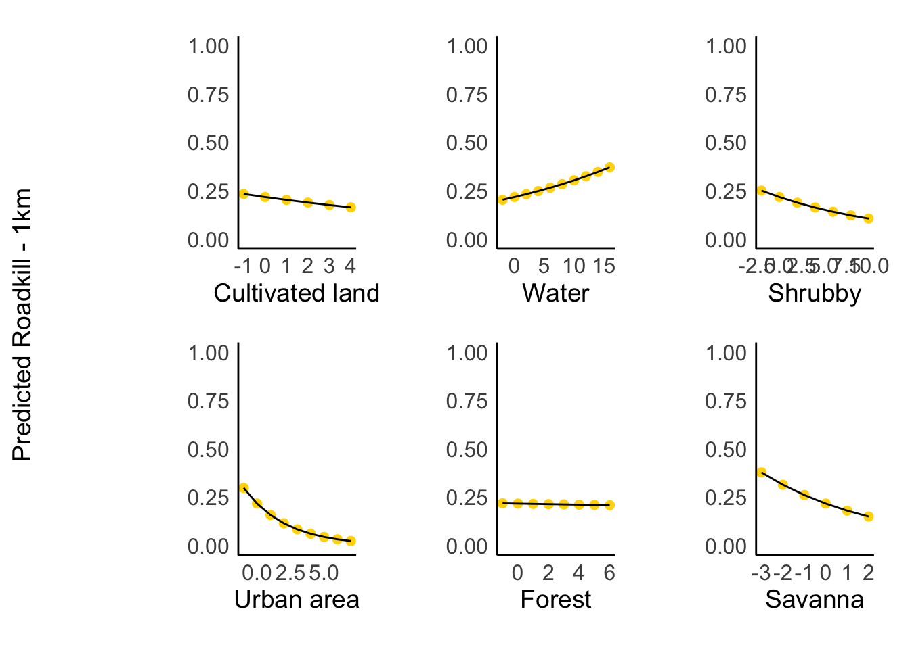
3km
for (i in 1:length(landscape_vars)) {
var <- landscape_vars[i]
label <- landscape_labels[i]
landscape_effect <- ggpredict(taxa_3km_m0, terms = var, bias_correction = TRUE)
p <- ggplot(landscape_effect, aes(x = x, y = predicted)) +
geom_point(size = 2, color = "#1f77b4") +
geom_line(color = "black") +
labs(x = label, y = NULL) +
scale_y_continuous(limits = c(0, 1)) +
theme_minimal() +
theme(
plot.title = element_blank(),
panel.grid.major = element_blank(),
panel.grid.minor = element_blank(),
panel.border = element_blank(),
axis.line = element_line(color = "black"),
axis.text = element_text(size = 12),
axis.title.x = element_text(size = 14),
axis.title.y = element_text(size = 14),
)
plot_list[[var]] <- p
}
final_plot <- wrap_plots(plot_list, ncol = 3, byrow = TRUE) +
plot_annotation(title = NULL, tag_levels = NULL) &
theme(
axis.title.y = element_text(angle = 90, vjust =0.5),
plot.margin = margin(10, 10, 10, 40)
)
y_label <- ggdraw() + draw_label("Predicted Roadkill - 3km", angle = 90, hjust = 0.5)
plot_grid(y_label, final_plot, ncol = 2, rel_widths = c(0.05, 1))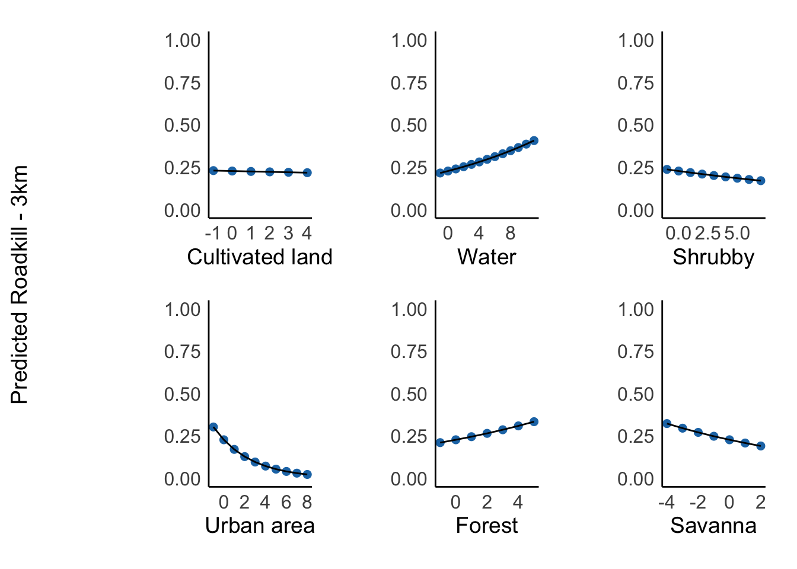
for (i in 1:length(landscape_vars)) {
var <- landscape_vars[i]
label <- landscape_labels[i]
landscape_effect <- ggpredict(taxa_5km_m0, terms = var, bias_correction = TRUE)
p <- ggplot(landscape_effect, aes(x = x, y = predicted)) +
geom_point(size = 2, color = "#9B59B6") +
geom_line(color = "black") +
labs(x = label, y = NULL) +
scale_y_continuous(limits = c(0, 1)) +
theme_minimal() +
theme(
plot.title = element_blank(),
panel.grid.major = element_blank(),
panel.grid.minor = element_blank(),
panel.border = element_blank(),
axis.line = element_line(color = "black"),
axis.text = element_text(size = 12),
axis.title.x = element_text(size = 14),
axis.title.y = element_text(size = 14),
)
plot_list[[var]] <- p
}
final_plot <- wrap_plots(plot_list, ncol = 3, byrow = TRUE) +
plot_annotation(title = NULL, tag_levels = NULL) &
theme(
axis.title.y = element_text(angle = 90, vjust =0.5),
plot.margin = margin(10, 10, 10, 40)
)
y_label <- ggdraw() + draw_label("Predicted Roadkill - 5km", angle = 90, hjust = 0.5)
plot_grid(y_label, final_plot, ncol = 2, rel_widths = c(0.05, 1))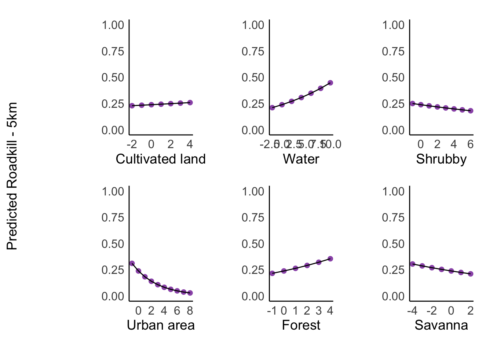
Preliminary conclusions
The model outputs indicate that paved roads significantly increase wildlife roadkill rates, as does traffic volume, supporting our initial hypotheses. However, contrary to expectations, pavement type did not differentially affect roadkill rates across taxonomic groups (reptiles, birds, mammals) in the current dataset.
Seasonality emerged as another critical factor. In this region of Brazil, the rainy season coincides with higher temperatures, which aligns with peak activity periods for most local species, likely explaining the elevated roadkill records during this time.
Forest cover became a significant driver of roadkill at larger scales (3–5 km), supporting our hypothesis that broader spatial extents better capture habitat availability. These areas likely act as connectivity corridors, shaping animal movement patterns and increasing collision risks near roads.